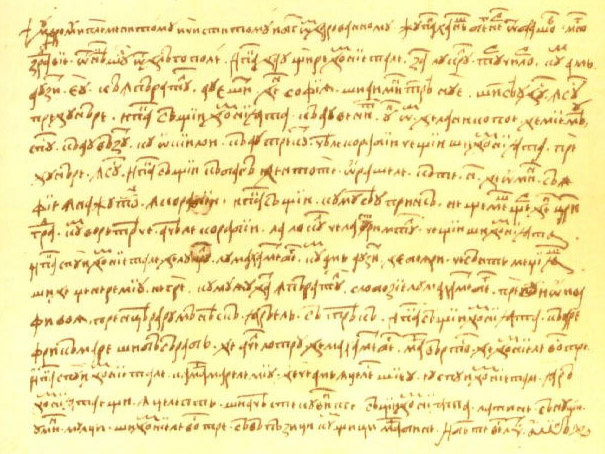

Profesyonel Tercüman Kadromuz ile,
Çeviri İhtiyaçlarınıza Uygun Fiyatlı
Çözümler Sunuyoruz!
20 yıllık Afganca Tercüme Deneyimi ve Profesyonel Afganca Tercümanlardan Oluşan Kadromuzla Noter Yeminli Afganca Çeviri Hizmetleri
Çevirmenliğin çıkışı çok eski yıllara dayanmaktadır. İnsanların yerleşik hayata geçmesinden sonra farklı topluluk ve kabileler ile karşılaşıldığı ve birbirleri ile iletişime geçmek için dillerini çevirdikleri ortaya çıkmıştır. İnsanların birbirleriyle iletişimi güçlendirmek için geliştirdiği dilin 100.000 yıl önceye dayandığı düşünülmektedir. Çeviri yapmanın kökünün çok eskiden günümüzdeki çok çeşitli dillerin tercüme edildiği döneme gelinmiştir. Tercüme bürosu ile yapılacak çevirinin çeşidine göre tercüman seçilmektedir.
Noter Yeminli Tercüme, kelime anlamı olarak tercüme işinde uzman kişi tarafından çevrilmiş belgelerdir. Yapılacak her tercüme yeminli tercüme gerektirmemektedir. Normal belgeler sadece tercümanlar tarafından çevrilebilir. doğum belgesi, evlik belgesi, lise diploması, üniversite diplomaları gibi hukuksal belgeler kesinlikle yeminli tercüme gerektirmektedir.
Yapılacak çevirinin ardıl çeviri veya simültane çeviri için konsepte hangisi daha uygun ise o seçilmelidir. Simültane çeviri konuşmacı ile hemen hemen aynı anda kelime kelime çevrilen bir çeviri çeşididir. Ardıl çeviri ise konuşmacı konuşmasını tamamladıktan sonra yapılan çeviri çeşididir. Çeviri çeşidi önemli olduğu kadar tercümanın çevrilecek dile hakim olması gerekmektedir. Hırvatistanlı bir topluluğa çeviri yapılacak ise uzman Afganca tercüman bulmak gerekir.
Afganca Tercüme konusunda profesyonel çalışan çeviri bürolarından hizmet alınması yapılacak işin kalitesi ve kurumsallığı açısından daha faydalı olacaktır. Birçok dilde sözlü çeviri yapan tercüme bürolarının başka bir uzmanlık alanı ise yazılı çeviridir. Yazılı metinlerin Afganca çeviri bilen Afganca yeminli tercüman ile hizmet vermektedirler. İnsanlar arası iletişimin en üst seviyede olduğu dönemde sözlü ve yazılı çevirinin ve çevirmenin önemi her geçen gün artmaktadır.
Deneyimli ve profesyonel Almanca tercümanlardan oluşan kadromuzla hızlı ve güvenilir, noter tasdikli ve yeminli Almanca tercüme hizmetleri vermekteyiz.
Tercüme Vadisi Almanca tercüme hizmetleri konusunda sahip olduğu deneyim sayesinde hem bireysel hizmetler hem de kurumsal hizmetler verebilmektedir. Firmamız çalışma süresi boyunca yüzlerce uluslararası ünlü markaya çeviri hizmetleri vermiş ve iş ortaklıkları gerçekleştirmiştir. Tercüme konusunda çözüm ortağı olarak bir çok projede ve girişimde bulunan Tercüme Vadisi %100 müşteri memnuniyeti prensibiyle çalışmaktadır.
Tercüme Vadisi Almanca Türkçe tercüme hizmetleri konusunda müthiş bir tecrübeye sahiptir. Takdir edersiniz ki resmi evraklarla ilgili tercümelerde yeminli tercüme ve noter tasdikli tercüme hizmetleri gerekmektedir. Çeviri yapabilen herkes resmi evrakları geçerli bir şekilde çevirse dahi kabul görmeyebilmektedir. Bu nedenle, bir çok noterle anlaşmalı olarak çalışan Tercüme Vadisi hem işlemlerinizin hızlanmasını sağlamaktadır hem de Almanca Türkçe tercümelerinizin doğru bir şekilde yapılabilmesini sağlamaktadır. Alanında uzman çevirmen kadromuz, kaliteli, hızlı ve güvenilir bir şekilde Almanca tercüme hizmetleri vermektedir.
Yabancı uyruklu kişilerle evlenmek isteyen vatandaşlarımızın evliliklerinin geçerli olabilmesi için nikah tercümanlığı hizmeti alması gerekmektedir. Nikah tercümanlığı hem gerekli evrakların çevirisinin yapılması hem de gerekiyorsa nikah şahitliği yapılması hizmetlerinden oluşur. Türkçe bilmeyen bir kimsenin nikahta beyan ettiği sözlerin yeminli bir tercüman tarafından çeviri yapılarak aktarılması gerekmektedir. Yeminli tercüman tarafından yapılmayan tercümeler geçerli görülmemektedir.
Bir çok vatandaşımızın yaşadığı Almanya’da vatandaşlarımızın çeşitli belgeler beyan etmesi gerekebilmektedir. Bu gibi durumlarda Tercüme Vadisi resmi evrak tercüme hizmeti sunarak kaliteli ve güvenilir bir şekilde işlemlerinizin tamamlanmasını sağlamaktadır. Durumun tersi olarak Almanya’da yaşayan vatandaşlarımız ülkemizde beyan etmeleri gereken evrakları tercüme ettirmek zorunda kalabilirler. 20 yıllık tecrübeye sahip ve 52 resmi dilde çeviri yapabilme kapasitesindeki firmamız Almancadan Türkçeye resmi evrak tercümesi de yaparak işlemleriniz tamamlar.
Tercüme Vadisi sahip olduğu anlaşmalı noterler sayesinde işlemlerinizin daha kısa sürede yapılmasını sağlamaktadır. Firmamız Almanca tercüme konusunda ülkemizin öncü ve lider tercüme bürolarından bir tanesidir. Sahip olduğumuz deneyim, ihtiyacınız olan çeviriler konusunda da oldukça deneyimli olmamızı sağlamaktadır. Bu sayede hizmetlerimizi eksiksiz ve kaliteli bir şekilde verebilmekteyiz.
Arapça tercüme konusunda uzman yeminli tercümanlarımız ile günün her saatinde siz müşterilerimize tercüme hizmeti vermekteyiz. Kurumsal ve bireysel müşterilerimiz için sunduğumuz olduğumuz özel çözümler ile en kaliteli çeviri hizmetini sizler için bir araya getiren tercümanlık şirketimiz 20 yıllık deneyimi ile çevirisi yapılacak işleriniz güvence altında.
Hızlı ve acil tercüme ve noter tasdikli Arapça çeviri işleriniz için bütçenize uygun fiyatlar sunan Tercüme Vadisi Çeviri Bürosu bu alanda vermekte olduğu profesyonel çözümler ve güçlü referansları ile sektörün lideri olarak hizmet sunmaya devam ediyor.
Noter Yeminli Tercüme, kelime anlamı olarak tercüme işinde uzman kişi tarafından çevrilmiş belgelerdir. Yapılacak her tercüme yeminli tercüme gerektirmemektedir. Normal belgeler sadece tercümanlar tarafından çevrilebilir. doğum belgesi, evlik belgesi, lise diploması, üniversite diplomaları gibi hukuksal belgeler kesinlikle yeminli tercüme gerektirmektedir.
Tercüme Vadisi nikah tercümanlığı ve Arapça nikah şahidi olma konusunda oldukça tecrübeli, Arapça dili konusunda ise ülkemizin en deneyimli ve kaliteli tercüme bürolarından bir tanesidir. 20 yıllık çalışma hayatımızda yüzlerce Arapça nikah tercümanlığı hizmetini başarılı bir şekilde vermiş bulunuyoruz. Arapça nikah tercümanlığı için her dilde olduğu gibi yeminli tercümanlık gerekmektedir. Böylece Türkçe bilmeyen kişilerin sözlerinin tercümesi yeminli çevirmenlerin güvencesi altına alınabilmektedir.
Her dil bilen kişi tercüman olamamaktadır. Bunun en önemli sebebi yapılan çevirilerin yeminli tercümanlar tarafından yapılmaması resmi kurumlar tarafından kabul edilmemesi olarak görülür. Ayrıca kaynak ve hedef dilleri bilmek tercüme hizmeti verebilmek için yetersizdir. Arapça tercüme yapacak olan kişilerin hem her iki kültürü de yakından tanıması hem de her iki dilin kullanıldığı alanlarda yaşamış olması gerekmektedir. Aksi halde yanlış anlaşılmalar oluşabilmektedir. Bu durumda tercüme hizmeti almak isteyen kişilerin beklenmedik zararlar görmesine neden olmaktadır.
Tercüme Vadisi tarafından Arapçadan Türkçeye tercüme yapılabildiği gibi Türkçeden Arapçaya da yapılabilmektedir. Her iki dilde de uzmanlaşmış olan tercümanlarımız iki dil arasında da çeviri yaparak kaliteli, hızlı ve güvenilir hizmet verebilmektedir.
Firmamız komşu ülkelerimizden ve yakın bir kültüre sahip olduğumuz Azerbaycan’ın dili olan Azerice konusunda uzmanlaşmıştır. 20 yıllık deneyimimiz firmamız ve tercüman kadromuzun Azerice tercüme hizmetlerini son kalitede ve oldukça hızlı verebilmemize imkan sağlamaktadır.
Azerice çeviri, işleriniz için tercüme büromuz aracılığı ile çeşitli tercümelerin amacına göre Azerice çevirmen bulabilirsiniz. Ekonomi konularında, spor müsabakalarında, turistik gezilerde, arkeoloji konularında ve diğer konularda çeviri yapılacaksa bu konularda bilgili ve tecrübeli Azerice tercüman gerekiyor. Çevirmenin kendi alanında uzman olması hatalı ve yanlış çevirileri ortadan kaldırmaktadır. Yapılacak çevirinin hangi dilde yapılacaksa Azerice tercüme veya farklı bir dilde yapılacaksa o dilde yeterli seviyedeki tercümanların tercih edilmesi gerekmektedir.
Noter Yeminli Tercüme, kelime anlamı olarak tercüme işinde uzman kişi tarafından çevrilmiş belgelerdir. Yapılacak her tercüme yeminli tercüme gerektirmemektedir. Normal belgeler sadece tercümanlar tarafından çevrilebilir. doğum belgesi, evlik belgesi, lise diploması, üniversite diplomaları gibi hukuksal belgeler kesinlikle yeminli tercüme gerektirmektedir.
Farklı bir dilin başka bir dile veya ortak bir dile doğru şekilde aktarılmasına çeviri denmektedir. Yapılacak işe göre tercüman bulmak çevirinin kalitesi açısından daha verimli olacaktır. Doğru çevirmen seçimi yapmak için tercüme bürosundan yardım alınması gerekmektedir. Tıbbı çeviri, yada medikal ürünler ile ilgili bir çeviri yapılması gerekiyorsa tıbbı konularda bilgili kişilerin çeviri yapması teknik terimlerin doğru ve düzgün bir şekilde çevrilmesi için daha iyi olacaktır.
Sizlere kısa sürede ulaşan farklı dildeki bir yazınızı en kısa sürede çevirisini yapıp sizlere ulaştırmaktayız. Azerice tercüme hizmeti veren firmamızdan Azerice tercümanlık hizmetleri almak için çeviri fiyatları hakkında bilgi alınabilir, online gönderi sistemiyle fiyat teklifi istenebilir.
20 yıllık Boşnakça Tercüme Deneyimi ve Profesyonel Boşnakça Tercümanlardan Oluşan Kadromuzla Noter Yeminli Boşnakça Çeviri Hizmetleri
Dünyada yüzlerce uygarlığın, devletin yüzlerce dili ve onlarında bölgelerine göre şive ve ağızları vardır. Dünyanın ortak dili İngilizce ile insanlar bu dili öğrenerek dünyanın her yerinde ki insanlarla etkileşime girerler. Ama İngilizce bilmeyen insanları diğer yabancı dildeki insanlarla iletişime sokmak tercümanların görevidir. Özellikle Tercüme Bürosu gibi yerlerde çalışan tercümanların bazıları da serbest olarak da tercüme yapmaktadır.
Noter Yeminli Tercüme, kelime anlamı olarak tercüme işinde uzman kişi tarafından çevrilmiş belgelerdir. Yapılacak her tercüme yeminli tercüme gerektirmemektedir. Normal belgeler sadece tercümanlar tarafından çevrilebilir. doğum belgesi, evlik belgesi, lise diploması, üniversite diplomaları gibi hukuksal belgeler kesinlikle yeminli tercüme gerektirmektedir.
Alt veya orta seviyedeki tercümanlara göre üst seviyedeki tercümanlarla çalışmak her zaman daha güvenilirdir. İşte bu üst düzey ve profosyanel seviyeye gelmek için tercümanlar belirli sınavlara girerek Yeminli Tercüman olurlar. Özellikle ülkemiz önce komşularımızla ilişkilerimize ve iletişime önem verdiği için onların dillerini iyi bilen ve konuşan tercümanlara öncelik verir. Ülkemizin en sevdiği komşularından olan Bosna Hersek devletiyle özellikle devlet yöneticileriyle iletişim için Boşnakça çeviri yapılmaktadır.
Sadece konuşma olarak değil onların eserlerini, kitaplarını ve özellikle resmi yazılar, mektuplar için de Boşnakça tercüme yapılması önemli çeviri kurallarına uyarak gerçekleştirilir. Devletler arasındaki ilişkileri, konuşmaları mektupları resmi belgeleri çeviren ve onaylamaya katkıda bulunan Boşnakça tercümanlar bir devletin uluslar arası ilişkileri için olmazsa olmaz kişilerdir. Hele ki ülkenin kendi komşuları ile iyi iletişimde olması diğer ülkelerden daha önemlidir. Sadece devlet işlerinde değil normal hayatta da Bosna hersek den gelen insanlarla iletişim kurmak çeviri yapmak için de önemlidir.
Firmamız 52 resmi dilde tercüme yapabilme kapasitesine sahiptir. Bu anlamda Türkiye’nin önde gelen tercüme bürolarından biri olduğumuz belirtmekten gurur duyuyoruz. Tercüme Vadisi 20 yıllık deneyimi sayesinde Bulgarca Tercüme konusunda uzmanlaşmış bir şekilde hizmet verebilmektedir. Çevirmenlerimiz hem dil bilgisi olarak hem de kültürel olarak dillere hakimdir. Bu sayede anlamlarda herhangi bir yanlışlık yapılmasının önüne geçilebilmektedir.
Firmamız çalışma hayatı boyunca yüzlerce ünlü marka ile iş ortaklığı gerçekleştirmiştir. Kurumsal tercüme hizmetlerinde Türkiye’nin en tecrübeli firmalarından biri olan Tercüme Vadisi kurumsal etkinliklerde çözüm ortaklığı da yapmıştır. Çok uluslu etkinliklerde sözlü ve yazılı tercümeler ile iletişimin anlaşılır, hızlı ve kaliteli bir şekilde gerçekleşebilmesini sağlamıştır.
Noter Yeminli Tercüme, kelime anlamı olarak tercüme işinde uzman kişi tarafından çevrilmiş belgelerdir. Yapılacak her tercüme yeminli tercüme gerektirmemektedir. Normal belgeler sadece tercümanlar tarafından çevrilebilir. doğum belgesi, evlik belgesi, lise diploması, üniversite diplomaları gibi hukuksal belgeler kesinlikle yeminli tercüme gerektirmektedir.
Tercüme Vadisi Çeviri Bürosu potansiyel müşterilerinin gereksinimlerini karşılamak amacıyla müşterilerinin sektörlerine uygun çalışanlar ile tercümanları bir araya getirerek tercüme ihtiyaçlarınızın giderilmesi görevini üstlenmektedir. İnşaat, döviz, tekstil, evlilik, vize vb. alanlarda faaliyet göstermektedir. Tercüme desteği sağlamak amacı ile hizmet verip, müşteri memnuniyetini sağlamaktadır. Bu sayede birçok alanda yapılan tercümeler sayesinde işleriniz kolaylaşmaktadır.
Yeminli tercüman, bildiği dili çeviri yapmasını noter huzurunda attığı imza ile kanıtlayan tercüman demektir. Her tercüman yeminli tercümanlık yapamaz, bunu için ilk başta Türkiye Cumhuriyetinin vatandaşı olma zorunlulukları vardır. Bir belgeyi imzaladıklarında, o belge direk valiliklere gidebilir. Bulgarca tercüman, Belgelerinin altına imzalarını atarak, bu belge kesin doğrudur onayı vermektedir.
Bulgarca tercüme yapabilmek hem kültürel hem de dil bilgisi konusunda oldukça bilgili olmayı ve tecrübeli olmayı gerektirmektedir. Hedef ve kaynak dilde sahip olunan tecrübe, kültürel bilgi, kullanılacak olan dil bilgisini de doğrudan etkileyebilmektedir.
Günümüzde ticaretin hızla gelişmesi ve ticaret alanlarının çoğalması sayesinde, her alanda ticaret yapar hale geldik. Gerek yurt içi gerekse yurt dışına ithalat ve ihracat yapmanın kapıları tüm ticaretçilerimize açıldı. Birçok uluslar arası firma ile anlaşmalar yapıp gerek onlardan ürün alıp gerekse ürünlerimizin satışını kendilerine yapıyoruz. Üstelik bunu sürekli görüşme sağlamadan yazıyla yani e-mail aracılığıyla gerçekleştiriyoruz. Fakat farklı ülkedeki müşterilerimizle aynı dili konuşmuyoruz. İşte bu gibi durumlarda kaliteli bir Çekçe yeminli tercüman ve yeminli tercümanlarına ihtiyaç duyarız.
Noter Yeminli Tercüme, kelime anlamı olarak tercüme işinde uzman kişi tarafından çevrilmiş belgelerdir. Yapılacak her tercüme yeminli tercüme gerektirmemektedir. Normal belgeler sadece tercümanlar tarafından çevrilebilir. doğum belgesi, evlik belgesi, lise diploması, üniversite diplomaları gibi hukuksal belgeler kesinlikle yeminli tercüme gerektirmektedir.
Tercüme Vadisi Çeviri Bürosunda seçecek olduğumuz tercümanın, en doğru şekilde tercüme yapıp sizlere en kısa sürede cevap vermesi unsuruna dikkat ederiz. Çünkü ticaret öyle hassas bir olgudur ki; en küçük bir yanlış ibarede veya yanlış konuşmada bile itibarınız sarsılabilir ve müşterilerinizin güvenini azda olsa kaybedebilirsiniz. Bu durumda sizin firma kimliğiniz için olumsuz bir olgudur. İşte sizleri bu durumdan kurtarabilmek için, gerekli yazışmalarınızı tam zamanında ve en doğru şekilde ulaştırabilmeniz için sizlere tercümanlık imkânı sunmaktayız. Birçok dilde tercümanları bulunan firmamız, Çekçe tercüme, Belgeli ve güvenilir tercümanlarımız sayesinde en kısa sürede çeviri işlerimiz yapılır ve sizlere iletilir.
Çekçe çeviri yayın ve metinlerden olabilmektedir. Bu tercümeyi doğru yapan kişiler anlatıma da sadık kalarak aynı hissi okuyucuda uyandırabilmektedir. Bunlara dikkat ederek çeviri yapan çekçe tercümanlar sayesinde tercüme işlemleri daha kaliteli bir hal almaktadır. Tercüme bürolarında görüşeceğiniz kişiler ile güven duygusu içinde olmanız gerekmektedir. Bu nedenle güven duymanda hiçbir tercüme işlemine başlanılmamalıdır. Kaliteli hizmet evren bürolar sayesinde çeviri işleri hızlanmıştır.
Firmamız, Çince konusunda uzmanlaşmış ve kültürel olarak bilgili tercüman kadrosu ile hizmet vermektedir. Bu sayede firmamızın yapmış olduğu çince tercümeler kaliteli, hızlı ve güvenilir olmaktadır. Tercüme Vadisi dünyaca ünlü bir çok firma ile iş birliği yaparak 20 yıllık deneyimi boyunca bir çok başarıya imza atmıştır. Dünya çapında ünlü markaların etkinliklerinde de tercüme çözüm ortağı olarak görev almış olan firmamız bir çok başarıyı elde etmiştir.
Bu yüzden size tavsiyemiz , Çin’den gelebilecek herhangi bir Çince evrağı imzalamanız gerekiyorsa , bu işlemden evvel mutlaka Çince tercüme yapabilen bir dil uzmanından yardım istemeniz ve metinden emin olduktan sonra imza atmanızdır. Böylece , sonradan oluşabilecek bir sorunu en başından yok etmiş olursunuz. Çinliler ile bir projeye başlamak kolaydır ama devamı için Çince çeviri hizmeti almanız işlerinizi kolaylaştırır.
Çinlilerle iletişim kurabilmek çok da kolay değildir. Çünkü zaman zaman ortak bir dil konuşamadığınız kişilerle karşılaşırsınız. Bu durumda işinizi garantiye almak ve çince tercüman ile çalışmak en doğru seçenektir. Böylece, iletişim sorununu düşünmez , kafanızı sadece işinize odaklayabilirsiniz.
20 yıllık Danca Tercüme Deneyimi ve Profesyonel Danca Tercümanlardan Oluşan Kadromuzla Noter Yeminli Danca Çeviri Hizmetleri
İletişimin bu denli kolay oluşu bir dilden başka bir dile çeviri yapılması yoluyla birbirlerinin yaşam tarzlarından edebi eserlerine kadar birçok kültürel kimliklerinin farklılıklarını öğrenmelerine yol açmaktadır. Bu eserlerin istenen dile çevrilmesini kolaylaştıran kişiler de yeminli tercümanlardır. Tercümanların dikkat etmesi gereken belki de en önemli hususlardan biri şudur: Yeminli tercümanlar tercüme yaparlarken mutlaka ne tercüme ettikleri dili yozlaştırmalıdır ne de çevrilen dilin kendi doğasını bozmalıdır. Her iki hususa da dikkat etmeli, hem eser sahibinin eserinin doğallığını bozmamalı hem de okurların onların dünyasından kopmamalarını sağlamalıdırlar. İşte bu nedenle Danca tercüme yapan kişilerin bu konuda yetkili ve konuya hakim olmaları şarttır.
Noter Yeminli Tercüme, kelime anlamı olarak tercüme işinde uzman kişi tarafından çevrilmiş belgelerdir. Yapılacak her tercüme yeminli tercüme gerektirmemektedir. Normal belgeler sadece tercümanlar tarafından çevrilebilir. doğum belgesi, evlik belgesi, lise diploması, üniversite diplomaları gibi hukuksal belgeler kesinlikle yeminli tercüme gerektirmektedir.
Danca çeviri yayın ve metinlerden olabilmektedir. Bu tercümeyi doğru yapan kişiler anlatıma da sadık kalarak aynı hissi okuyucuda uyandırabilmektedir. Bunlara dikkat ederek çeviri yapan danca tercümanlar sayesinde tercüme işlemleri daha kaliteli bir hal almaktadır. Tercüme bürolarında görüşeceğiniz kişiler ile güven duygusu içinde olmanız gerekmektedir. Bu nedenle güven duymanda hiçbir tercüme işlemine başlanılmamalıdır. Kaliteli hizmet evren bürolar sayesinde çeviri işleri hızlanmıştır.
Kişilerin birbirlerinin dünyalarına girmelerini sağlayan bu yolla farklı kültürler dünyanın her bireyine tanıtılmaktadır. Eğer sizde farklı bir dünya tanımak ve Danca dilinde tercüme yaptırmak isterseniz bu konuda uzman bir Danca tercüman‘a bunun içinde Danca Çeviri Bürosuna ulaşmanız gerekmektedir.
20 yıllık Ermenice Tercüme Deneyimi ve Profesyonel Ermenice Tercümanlardan Oluşan Kadromuzla Noter Yeminli Ermenice Çeviri Hizmetleri
Hemen hemen artık her dilden her dile çeviri yapılmaktadır. Bunun için bu konularda birçok yetkili tercüme bürosu vardır. Eğer sizler de Ermenice tercümeye ihtiyaç duyacak olursanız bu konuda başarılı bir tercüman bürosu bulmalısınız. Hem o kültüründe dokusunu yansıtacak ve bunu özenle koruyacak hem de bu eserin formunu bozmayacak bir Ermenice çeviri yapılmış olacaktır.
Noter Yeminli Tercüme, kelime anlamı olarak tercüme işinde uzman kişi tarafından çevrilmiş belgelerdir. Yapılacak her tercüme yeminli tercüme gerektirmemektedir. Normal belgeler sadece tercümanlar tarafından çevrilebilir. doğum belgesi, evlik belgesi, lise diploması, üniversite diplomaları gibi hukuksal belgeler kesinlikle yeminli tercüme gerektirmektedir.
Ana dilinde yazılmamış bir kitabın ana dil tadında okunabilmesi hem okurun okuduğundan zevk alması açısından hem de yazarların bu konudaki emeklerinin yabana atılmaması açısından bir hayli önem arz etmektedir. Bu sebeple alanından uzmanlaşmış bir yeminli Ermenice tercümana başvurmalıyız. Böyle bir imkanı yakalarsanız hem çeviri sonrasında okurlar tarafından çevirisini yaptığınız eserler yazılar her ne ise zevkle okunacak ve takdir edilecek hem de bu sayede eser sahibi icra ettiği eserin kalitesi ve akıcılığı bozulmamış olacaktır.
Günümüzde artık her ülkede hemen hemen her dilde kitap, film gibi paylaşımlara rastlanmaktadır. Dünyaca ünlü kitaplardan tutun da dünyaca ünlü filmlere kadar herkes tarafından beğeni ile takip edilen birçok konu vardır. İlgi arttıkça bahsedilen bu alanların doğal olarak ilgi duyan kitlenin diline çevrilmesine ihtiyaç duyulmaktadır. Ermenice dilinde tercüme yaptırmak isteyen kişi bu konuda başarılı bir tercüme bürosu tercih etmelidir.
20 yıllık Estonca Tercüme Deneyimi ve Estonca Profesyonel Tercümanlardan Oluşan Kadromuzla Noter Yeminli Estonca Çeviri Hizmetleri
Çeviri bürosu bünyesinde bulunan kaliteli ve profesyonel çevirmenler ile üst düzey hizmet vermektedirler. Çeşitli meslek kollarından ve az bilinen dillerdeki çevirmenler ile çalışan çeviri ofisleri en zor işlerde bile zorlanmadan hizmet vermektedirler. Estonca gibi çok az bilinen bir dilde akademik çeviriler verebilen örneğin estonca tercümanlara çok sık rastlanmamaktadır. Estonca çeviri, Arnavutça çeviri, Makedonca çeviri gibi dış ilişkilerin fazla olduğu fakat az bilinen diller çevirebilecek çevirmenlerin bulunduğu çeviri ofisleri müşterilerine kaliteli tercüme hizmeti vermektedir.
Noter Yeminli Tercüme, kelime anlamı olarak tercüme işinde uzman kişi tarafından çevrilmiş belgelerdir. Yapılacak her tercüme yeminli tercüme gerektirmemektedir. Normal belgeler sadece tercümanlar tarafından çevrilebilir. doğum belgesi, evlik belgesi, lise diploması, üniversite diplomaları gibi hukuksal belgeler kesinlikle yeminli tercüme gerektirmektedir.
Çeviri yazılı ve sözlü olmak üzere iki ana temele ayrılmaktadır. Yazılı çevirilerde dikkat edilmesi gereken konu okunan içeriğinin tam anlaşılarak harfiyen aynısını çevrilmesi gerekmektedir. Yazılı çevirilerde okunulanın dışında çevirmen kendi yorumunu asla eklememelidir. Resmi dairelerde ve hukuk büroları için yapılan yazılı metinler çevrilirken yeminli tercüman kullanılması daha güvenli olacaktır. Yeminli tercümanlar noterden o dil konusunda onaylı belgeleri sayesinde yapılan işin doğruluğunu ve gizliliğini korunacağını garanti ederler.
Sözlü tercüme işlerin çeşidine göre doğru tercüman seçmek yapılacak sunumun kalitesi için çok önemlidir. Doğru tercüman seçimi yapmak için tercüme bürosunun verdiği hizmetlerden yararlanılabilir. Tercüman büroları yapılacak toplantının ne kadar süreceği hangi dilde çeviri yapılacağı, konuşmacı hakkında bilgiler ve çeviri yapılacak konunun içeriği hakkında bilgiler toplayarak yapılacak konuşmaya göre doğru tercümanı ayarlayarak toplantıların veya seminerlerin profesyonelce kurumsal bir havada geçmesini sağlamaktadır. Estonca tercüme hizmeti almak için bizi tercih edebilirsiniz.
Tercüme Vadisi profesyonel ve alanında uzman çevirmen kadrosu ile 20 yıllık deneyimi ile Farsça tercüme hizmeti vermektedir.
Farsça İran, Afganistan, Tacikistan, Özbekistan Basra Körfezi ülkelerinde konuşulan bir dildir. Birçok ülkede resmi dil olarak kullanılmaktadır. Kullanılan ülkelerde 100 milyon kişinin anadili olarak bilinmektedir.
Yüzyıllar boyu Farsça kullanılmakta ve zaman içerisinde önemli bir kültür dili halini aldığı görülmektedir. Halen pek çok kaynakta kökeni bu dilden kelimeler kullanılmaktadır. Bu yüzden de Farsça tercüme etmek doğru telaffuz edebilmek önemlidir.
Farsça Eski, Orta, Klasik olmak üzere değişimler göstermekte Farsça çevirisinin doğru yapılması önemlidir. İşinin uzmanı olmayanlar tarafından yapılan tercümeler çok sağlıklı olmamakla beraber istenilen sağlıklı bilgiyi vermez. Ülkemizde eğitim görmüş her iki dili de anadili gibi konuşan yeminli tercümanlarımız noter onaylı çevirilerinizi kolaylıkla yapacaklar size eksiksiz evrakları sunacaklardır.
Çalışanlarımız alanında uzman anadili Farsça olan yada ülkemizde isim yapmış üniversitelerin Filoloji bölümünden mezun olup, en az, 8-10 yıldır bu iş üzerine çalışan yada ihtisasını tamamlamış her iki dilde de sorunsuz konuşan, yazan ve okuyan farsça tercümanlarımız tarafından yapılmaktadır. Tercümanlarımız çevirilerini tamamladıktan sonra üst yönetimimizde bulunan anadili Farsça olan yetkili personelimiz tarafından tekrar metinleriniz kontrol edilmektedir. Tercüme büromuzda Ticari, Tıbbi, Hukuk, Teknik, Finans, Bilimsel ve Akademik, sanatsal metinler, web sitesi, yazışma, katalog, kitap, ihale ve sözlü çevirileriniz her şekilde hızlı ve uygun fiyatlarla sizlere sunulmaktadır.
Tercüme Vadisi, uzman çevirmen kadrosu ve %100 müşteri memnuniyeti prensibiyle Fince Tercüme hizmetleri vermektedir.
Firmamız her daim profesyonel tercüman kadrosu ile çalışmaktadır. Çevirmenlerimiz hedef dil ve kaynak dillerde dil bilgisine hakim olduğu gibi konuşulan dillerin kültürlerine de hakimdir. Bu sayede anlam kaymaları yaşanmamaktadır.
Dış ilişkilerin gelişmesiyle farklı ülkeler ile işbirliği yapan firmaların sayısı gün geçtikçe artmaktadır. Fince gibi az bilinen ve kullanılan diller için tercüme hizmeti veren tercüme bürosu az sayıdadır. Fince çevirisi ve telaffuzu zor bir dil olmasına rağmen ana dili gibi konuşan tercümanların sayısı çok fazladır. Fince çeviri, Çince çeviri, Lehçe çeviri, Kırgızca çeviri gibi tüm dünya dillerini uzman çevirmenler yardımıyla çevrilmektedir.
Yeminli Tercüme, kelime anlamı olarak tercüme işinde uzman kişi tarafından çevrilmiş belgelerdir. Yapılacak her tercüme yeminli tercüme gerektirmemektedir. Normal belgeler sadece tercümanlar tarafından çevrilebilir. doğum belgesi, evlik belgesi, lise diploması, üniversite diplomaları gibi hukuksal belgeler kesinlikle yeminli tercüme gerektirmektedir.
Çeviriler sadece sözlü olarak yapılmazlar. Yazılı olarak ta birçok çeviri yapılmaktadır. Yazılı metinlerin çevrilmesi, iş ile alakalı raporların çevrilmesi, turistik gezi çevirileri, kongre bildirgeleri, sanat eseri, öykü, roman gibi yabancı kitapların okunması için çevrilmesi gibi sayamadığımız birçok Fince çeviri yapılmaktadır. Resmi evrakların ve devlet dairesi ile ilgili evrakların çevrilmesinde yeminli tercümanlar kullanılarak. İşin ciddiyeti ve doğruluğu kayıt altına alınmaktadır.
Tercüme Vadisi noterlerle anlaşmalı bir şekilde çalışmaktadır. Bu sayede noter tasdikli tercüme işlemleri çok daha hızlı olmaktadır. 20 yıllık tecrübemiz sayesinde bir çok noterle iş ortaklığı yapmaktayız. İşlemlerimizi hızlandıran bu avantaj ayrıca verdiğimiz hizmetlerin de daha kaliteli olmasını sağlamaktadır. Fince tercüme hizmetlerinde Tercüme Vadisi Bürosu ülkemizin önde gelen çeviri ofislerinden biridir.
Fince tercümeler yayın ve metinlerden olabilmektedir. Bu tercümeyi doğru yapan kişiler anlatıma da sadık kalarak aynı hissi okuyucuda uyandırabilmektedir. Bunlara dikkat ederek çeviri yapan Fince tercümanlar sayesinde tercüme işlemleri daha kaliteli bir hal almaktadır. Tercüme bürolarında görüşeceğiniz kişiler ile güven duygusu içinde olmanız gerekmektedir. Bu nedenle güven duymanda hiçbir tercüme işlemine başlanılmamalıdır. Kaliteli hizmet evren bürolar sayesinde çeviri işleri hızlanmıştır.
20 yıllık Flemenkçe Tercüme Deneyimi ve Profesyonel Flemenkçe Tercümanlardan Oluşan Kadromuzla Noter Yeminli Flemenkçe Çeviri Hizmetleri
Dilden dile çevirinin zor olduğu bir dönemde Flemenkçe tercüme hizmeti yapacak tercüme bürosu ve bu konunun uzmanı birini bulmak da zor gibi gelebilir. Fakat teknoloji sayesinde artık bu gibi yetkin ve kaliteli kişilere rastlamak artık pek de zor olmamaktadır. Eğer sizlerin de elinde herhangi bir dile çevrilmesinin istediğiniz tercüme mevcut ise değinildiği üzere teknolojinin nimetlerinden yararlanabilir ve bu konuyu danışacağınız başarılı bir büro ve flemenkçe tercüman bulabilirsiniz.
Noter Yeminli Tercüme, kelime anlamı olarak tercüme işinde uzman kişi tarafından çevrilmiş belgelerdir. Yapılacak her tercüme yeminli tercüme gerektirmemektedir. Normal belgeler sadece tercümanlar tarafından çevrilebilir. doğum belgesi, evlik belgesi, lise diploması, üniversite diplomaları gibi hukuksal belgeler kesinlikle yeminli tercüme gerektirmektedir.
Tüm dünya dillerinde çeviriler artık bahsedilen bürolar aracılığı ile bir hayli kolaylaşmış durumdadır. Tercih edeceğiniz tercüme bürosunda yeminli tercüman bulunması da çevrilmek istenen eserin orijinalliğine zarar gelmemesi açısından epey önem arz etmektedir. Çeviri yapılan dilin kullanımı ve anlatımı zor olan birçok deyim ve söz öbeğine rast gelinmesi gayet doğal bir sonuçtur. Ancak burada önemli olan bu sözcük öbeklerine en yakın ifadelerin tercih edilmesidir. Orijinalliği bozulmadan dilediğiniz Flemenkçe çeviriyi yaptırabilirsiniz
Küreselleşmenin artışıyla birlikte bilgi alışverişi de bir hayli kolaylaşmıştır. Bu her dilden insanın birbirleriyle olan iletişimlerini artırmak ile birlikte birbirlerinin dillerini ve kültürlerini tanıma fırsatı da sağlamaktadır. Herhangi bir dilde yazılan bir eser bir başka dile çevrilebilmekte ve çevrildiği dilin okuyucuları tarafından kolaylıkla okunabilmektedir. Ancak çevrilen dilin dokusunu kaybetmemesi açısından öncelikle iyi bir tercümanlık bürosunun bulunması gerekmektedir. Hem okuyucunun o kültürünü tanıtmasını sağlayacak hem de yazar tarafından yazılan bu eserin hakkının verilmesine imkan tanıyacaktır.
Günümüzde birçok eser birçok dile çevrilebilir. Fransızca’dan çevrilen eserlerin sayısı oldukça fazladır. Almanya, İtalya ve Fransa gibi ülkelerin de klasik eserleri ve modern eserleri oldukça ilgi görmektedir. Özellikle Fransa yemek kültürü ve Fransızca yazılan oyunlar için Fransızca tercüme önemli bir yere sahiptir.
Kitap kurtları iyi bilir ki bir kitabı baştan sona çevirmek oldukça zordur. Kitapta anlatılanların harfi harfine ve aynı duyguyu verecek kelimelerle çevrilmesi ancak tecrübeli kişiler tarafından yapılabilmektedir. Kitap, dergi, makale gibi birçok konuda çeviri yapan Fransızca tercümanlar işlerini, çalıştıkları tercüme bürosu aracılığı ile alır. Tercüme bürosu kişilerce özel olduğu gibi bünyesinde birçok çevirmeni de barındırabilir. Tercüme Vadisi ülkemizde en bilinen, öncü ve lider tercüme bürolarından biridir. Sahip olduğu 20 yıllık deneyim sayesinde teknik çeviri ve bilimsel çevirilerde olduğu gibi edebi çeviri hizmetlerinde de kaliteli ve güvenilir çalışmayı hedeflemiştir.
Çevrilen makaleler, dergiler, kitaplar, şiirler dışında çevrilmesi yeminli olan belgeler de vardır. Çoğu belge günümüzde yeminsiz olarak çevrilir. Yeminli olarak çevrilen belgeler genellikle kişisel bilgileri içeren belgeler, not dokümanları, hukuki belgeler şeklinde sıralanır. Bu belgeleri çevirmek için >yeminli tercüman gerekmektedir. Yeminli tercümanlar genellikle devlet daireleri ve üniversiteler tarafından tercih edilir. Genellikle yeminli tercümanlık yapan kişiler ve tercümanlar Türkiye Çevirmenler Derneği üyesidir.
Çevirmenliğin çıkışı çok eski yıllara dayanmaktadır. İnsanların yerleşik hayata geçmesinden sonra farklı topluluk ve kabileler ile karşılaşıldığı ve birbirleri ile iletişime geçmek için dillerini çevirdikleri ortaya çıkmıştır. İnsanların birbirleriyle iletişimi güçlendirmek için geliştirdiği dilin 100.000 yıl önceye dayandığı düşünülmektedir. Çeviri yapmanın kökünün çok eskiden günümüzdeki çok çeşitli dillerin tercüme edildiği döneme gelinmiştir. Tercüme bürosu ile yapılacak çevirinin çeşidine göre tercüman seçilmektedir.
Noter Yeminli Tercüme, kelime anlamı olarak tercüme işinde uzman kişi tarafından çevrilmiş belgelerdir. Yapılacak her tercüme yeminli tercüme gerektirmemektedir. Normal belgeler sadece tercümanlar tarafından çevrilebilir. doğum belgesi, evlik belgesi, lise diploması, üniversite diplomaları gibi hukuksal belgeler kesinlikle yeminli tercüme gerektirmektedir.
Yapılacak çevirinin ardıl çeviri veya simültane çeviri için konsepte hangisi daha uygun ise o seçilmelidir. Simültane çeviri konuşmacı ile hemen hemen aynı anda kelime kelime çevrilen bir çeviri çeşididir. Ardıl çeviri ise konuşmacı konuşmasını tamamladıktan sonra yapılan çeviri çeşididir. Çeviri çeşidi önemli olduğu kadar tercümanın çevrilecek dile hakim olması gerekmektedir. Hırvatistanlı bir topluluğa çeviri yapılacak ise uzman Gürcüce tercüman bulmak gerekir.
Gürcüce Tercüme konusunda profesyonel çalışan çeviri bürolarından hizmet alınması yapılacak işin kalitesi ve kurumsallığı açısından daha faydalı olacaktır. Birçok dilde sözlü çeviri yapan tercüme bürolarının başka bir uzmanlık alanı ise yazılı çeviridir. Yazılı metinlerin Gürcüce çeviri bilen Gürcüce yeminli tercüman ile hizmet vermektedirler. İnsanlar arası iletişimin en üst seviyede olduğu dönemde sözlü ve yazılı çevirinin ve çevirmenin önemi her geçen gün artmaktadır.
Hindistan ile özellikle bilişim alanında iş yapan Türk firmaların sayısı giderek artıyor. Hindistan emin adımlarla dünyanın yazılım devi olma yolunda ilerliyor. İşte artan bu ticaret potansiyeli de daha çok dil problemi demek. Bir Türk için Hintçe anlaşmak neredeyse imkansız olduğu için bir tercüme bürosu ile anlaşıp size bir Hintçe çeviri uzmanı tahsis etmesini istemeniz en doğrusudur.
Noter Yeminli Tercüme, kelime anlamı olarak tercüme işinde uzman kişi tarafından çevrilmiş belgelerdir. Yapılacak her tercüme yeminli tercüme gerektirmemektedir. Normal belgeler sadece tercümanlar tarafından çevrilebilir. doğum belgesi, evlik belgesi, lise diploması, üniversite diplomaları gibi hukuksal belgeler kesinlikle yeminli tercüme gerektirmektedir.
Zaman zaman ise ikili anlaşmalar çerçevesinde Hindistan firmaları da Türkiye’yi ziyaret ediyor ve alım yapmak için girişimlerde bulunuyor. Türkiye Hindistan’a , ağırlıklı olarak mobilya ihracatı yapıyor. Bu tip işler çok yoğun görüşme ve yazışma gerektirir. Hatalardan kaçınmak için yeminli tercüman desteği almak çok akıllıca olur. Bu uzman sayesinde , tüm yazışmalarınız ya da görüşmeleriniz garanti altına alınmış olur. Üstelik , Hintliler onlara , kendi lisanlarıyla yaklaşılmasından son derece memnuniyet duyarlar. Hintçe tercüme ihtiyaçlarınız için en doğru adres Tercüme Vadisi'dir.
Hintçe çeviri yayın ve metinlerden olabilmektedir. Bu tercümeyi doğru yapan kişiler anlatıma da sadık kalarak aynı hissi okuyucuda uyandırabilmektedir. Bunlara dikkat ederek çeviri yapan hintçe tercümanlar sayesinde tercüme işlemleri daha kaliteli bir hal almaktadır. Tercüme bürolarında görüşeceğiniz kişiler ile güven duygusu içinde olmanız gerekmektedir. Bu nedenle güven duymanda hiçbir tercüme işlemine başlanılmamalıdır. Kaliteli hizmet evren bürolar sayesinde çeviri işleri hızlanmıştır.
Çevirmenliğin çıkışı çok eski yıllara dayanmaktadır. İnsanların yerleşik hayata geçmesinden sonra farklı topluluk ve kabileler ile karşılaşıldığı ve birbirleri ile iletişime geçmek için dillerini çevirdikleri ortaya çıkmıştır. İnsanların birbirleriyle iletişimi güçlendirmek için geliştirdiği dilin 100.000 yıl önceye dayandığı düşünülmektedir. Çeviri yapmanın kökünün çok eskiden günümüzdeki çok çeşitli dillerin tercüme edildiği döneme gelinmiştir. Tercüme bürosu ile yapılacak çevirinin çeşidine göre tercüman seçilmektedir.
Noter Yeminli Tercüme, kelime anlamı olarak tercüme işinde uzman kişi tarafından çevrilmiş belgelerdir. Yapılacak her tercüme yeminli tercüme gerektirmemektedir. Normal belgeler sadece tercümanlar tarafından çevrilebilir. doğum belgesi, evlik belgesi, lise diploması, üniversite diplomaları gibi hukuksal belgeler kesinlikle yeminli tercüme gerektirmektedir.
Yapılacak çevirinin ardıl çeviri veya simültane çeviri için konsepte hangisi daha uygun ise o seçilmelidir. Simültane çeviri konuşmacı ile hemen hemen aynı anda kelime kelime çevrilen bir çeviri çeşididir. Ardıl çeviri ise konuşmacı konuşmasını tamamladıktan sonra yapılan çeviri çeşididir. Çeviri çeşidi önemli olduğu kadar tercümanın çevrilecek dile hakim olması gerekmektedir. Hırvatistanlı bir topluluğa çeviri yapılacak ise uzman Hırvatça tercüman bulmak gerekir.
Hırvatça Tercüme konusunda profesyonel çalışan çeviri bürolarından hizmet alınması yapılacak işin kalitesi ve kurumsallığı açısından daha faydalı olacaktır. Birçok dilde sözlü çeviri yapan tercüme bürolarının başka bir uzmanlık alanı ise yazılı çeviridir. Yazılı metinlerin Hırvatça çeviri bilen Hırvatça yeminli tercüman ile hizmet vermektedirler. İnsanlar arası iletişimin en üst seviyede olduğu dönemde sözlü ve yazılı çevirinin ve çevirmenin önemi her geçen gün artmaktadır.
Hollanda ile ne tür ilişki içinde olursanız olun , kesinlikle işlerinizi lisan problemi yüzünden riske atmayın ve size tercüme konusunda yardım edecek bir profesyonel Hollandaca tercüman bulmak için Tercüme Vadisi ile çalışın.
Noter Yeminli Tercüme, kelime anlamı olarak tercüme işinde uzman kişi tarafından çevrilmiş belgelerdir. Yapılacak her tercüme yeminli tercüme gerektirmemektedir. Normal belgeler sadece tercümanlar tarafından çevrilebilir. doğum belgesi, evlik belgesi, lise diploması, üniversite diplomaları gibi hukuksal belgeler kesinlikle yeminli tercüme gerektirmektedir.
Düşünün ki , Hollanda’ya yerleşmek niyetindesiniz ve ilgili kurumlarla görüşmeleriniz var. Herhangi bir yanlış anlama hayatınızın gidişatını farklılaştırabilir. Böyle bir risk alır mısınız ? Elbette hayır. Yapacağınız yazışmalarda , Hollandaca yeminli tercüman gözetimi olması işinizi çok kolaylaştırır. Ya da konsolosluk görüşmelerinize giderken yanınızda Hollandaca çeviri yapacak bir uzmanın olması her şeyin yolunda gitmesi için çok önemli bir adımdır.
Hollanda küçük bir Avrupa ülkesi gibi gözükse de uluslararası gemi limanlarıyla taşımacılık sektöründe çok büyük söz sahibidir. Bunun dışında eğitim konusunda da Hollanda çok ileri bir ülkedir ve üniversitelerinde yabancı öğrenci kontenjanları bir hayli fazladır. Hollandaca tercüme her yerde işinize yarayabilir.
Türkiye’nin Hollanda ile her zaman çok ilişkisi olmuştur. Hem zamanında oraya giden ve yerleşen Türk vatandaşları vardır , hem de halen yerleşmek üzere Hollanda hükumetinden gerekli izinleri almaya çalışan vatandaşlarımız mevcuttur. Ticari faaliyetlerimiz de fazlasıyla yaygındır. Türkiye’nin ilişkileri hem ihracat hem de ithalat bazlıdır. İşte tüm bu ilişkiler Hollanda ile çok iyi bir iletişim gerektirmektedir. Ancak Hollandaca, öğrenilmesi oldukça zor bir lisandır. Bu bakımdan , öğrenmesi hayli uzun vakit alır. İletişim ise beklemez. Bu durumda bir tercüme bürosu ile görüşüp yardım istemek yapılacak en doğru davranıştır.
Ticaretin yanı sıra turistik faaliyetler de azımsanmayacak düzeydedir. İsrailliler özellikle İstanbul’u ziyaret etmeyi çok sever. Türkler ise çoğunlukla Kudüs’e gitmeyi tercih ederler.
İsrail Türkiye’ye vize uygulaması olan bir ülkedir. Bu yüzden de ticari faaliyetler nedeniyle çok fazla konsolosluk işleri olur. İsrail’in resmi dili İbranicedir. İbranice kadim bir dildir ve Türkler bu dile hakim değildir. Ancak , profesyonel tercüme bürosu yardımıyla , her türlü İbranice tercüme rahatlıkla yapılabilir. Çeviri Bürosunda en doğru şekilde tercüme yapıp sizlere ulaştırırız.
Noter Yeminli Tercüme, kelime anlamı olarak tercüme işinde uzman kişi tarafından çevrilmiş belgelerdir. Yapılacak her tercüme yeminli tercüme gerektirmemektedir. Normal belgeler sadece tercümanlar tarafından çevrilebilir. doğum belgesi, evlik belgesi, lise diploması, üniversite diplomaları gibi hukuksal belgeler kesinlikle yeminli tercüme gerektirmektedir.
İsrail Türkiye’den gıda maddeleri de alır ve gıdada Koşer uygulaması yapar. Koşer İslamiyetteki Helal uygulamasının Musevi versiyonudur. Koşersiz ürünleri ithal edemezler. Bu sertifika için de üretim dönemlerinde İsrail’den hahamlar gelir ve üretim sürecinin Koşer kriterlerine uygunluğunu gözlerler. Bu hahamların çoğu sadece İbranice konuşur. Bu yüzden , onlar geldiğinde İbranice çeviri yapacak bir yeminli tercüman mutlaka gereklidir. Zaten çoğunlukla , verdikleri sertifika kaşesi de İbranice dilinde yazılıdır. Her şeyin doğru yapıldığından emin olabilmek için tüm süreç boyunca , İbranice konusunda destek verecek bir iş ortağınızın olması en doğru ve güvenli olan yöntemdir.
İbranice çeviri yayın ve metinlerden olabilmektedir. Bu tercümeyi doğru yapan kişiler anlatıma da sadık kalarak aynı hissi okuyucuda uyandırabilmektedir. Bunlara dikkat ederek çeviri yapan İbranice tercümanlar sayesinde tercüme işlemleri daha kaliteli bir hal almaktadır. Tercüme bürolarında görüşeceğiniz kişiler ile güven duygusu içinde olmanız gerekmektedir. Bu nedenle güven duymanda hiçbir tercüme işlemine başlanılmamalıdır. Kaliteli hizmet evren bürolar sayesinde çeviri işleri hızlanmıştır.
Tercüme Vadisi Bürosu kalite, güven ve hızlı hizmet unsurlarını ilke edinerek yazılı ve sözlü İngilizce Tercüme hizmeti vermektedir.
Alanında uzman çevirmen kadrosuna sahip Tercüme Vadisi Ofisi 20 yıllık çeviri tecrübesine sahip sektöründe lider tercüme bürolarından biridir. Kurumsal müşterilere, öğrenci ve öğretmenlere uygun fiyat politikası ile hizmet vermektedir. Tercüme sektöründen öncü olmasını sağlayan, çevirileri süresiz arşivleme imkanı, hızlı kargolama, acil çeviri gibi özelliklere sahiptir.
Evrensel bir dil olan İngilizceyi sadece konuşmayı sağlayacak kadar bilmek yetmeyebiliyor. Kişiler her ne kadar İngilizceyi bildiğini düşünse de resmi, kurumsal dilli metinleri çevirmek her dil bilen insanın yapabileceği şeyler değildir. Yabancı dilde söylenen ya da duyulan sözler diğer bir dilde tam karşılığı olmayabiliyor. Bu durum aslında biraz da yabancı dilin kullanıldığı kültür ile alakalı bir durumdur. Bu nedenle, resmi, akademik, teknik, kurumsal konuşmalarda ya da yazışmalarda İngilizce tercüme ofislerine ihtiyaç duyulmaktadır. İngilizce Tercüme Ofisi, firmaların ihtiyacı olan kurumsal İngilizce bilgisini sunmaktadır.
Alanında uzman, tecrübeli çevirmen kadromuzla kaliteli ve gücenilir İspanyolca tercüme hizmetleri vermekteyiz.
Türkiye’nin ithalat ve ihracat hacminin giderek gelişmesi birçok ülkeyle olduğu gibi İspanya ile olan ilişkilerimizin de artmasını sağlamıştır. Bu nedenle gerek yazılı, gerekse sözlü olarak İspanyolca tercüme yapabilen kişilere olan ihtiyacı artırmıştır.
Ülkemize yerleşmekte olan birçok İspanyol vatandaşı da bulunmaktadır. Bu nedenle İspanyolca tercüme konusunda giderek daha fazla gelişim gösterilmektedir.
Günümüzde okuduğumuz birçok eserin yazarı yabancıdır. Okunan yabancı eserlerin kendi ana dilimizce okunmasını sağlayan tercümanlara bu konuda oldukça büyük iş düşmektedir. Tercüme bürosu altında çalışan kişiler uzun yıllar aldıkları eğitimden sonra eserleri noktası virgülüne tercüme etmek için oldukça zaman harcarlar.
Noter Yeminli Tercüme, kelime anlamı olarak tercüme işinde uzman kişi tarafından çevrilmiş belgelerdir. Yapılacak her tercüme yeminli tercüme gerektirmemektedir. Normal belgeler sadece tercümanlar tarafından çevrilebilir. doğum belgesi, evlik belgesi, lise diploması, üniversite diplomaları gibi hukuksal belgeler kesinlikle yeminli tercüme gerektirmektedir.
Çeviri Bürosuna gelen kitap, dergi, makale vb. yazıların çevrilmesi genellikle bir izne dayanmamaktadır. Ancak devlet dairesi ya da üniversiteler bünyelerinde Yeminli tercüman bulundurmaktadır. Yeminli Çevirmenler çevirdikleri işlerin gizliliği için görevlendirilen tercümanlardır. Üniversite ya da devlet dairesi haricinde özel İspanyolca tercümanlık yapan kişilerin de çevirdiği kişisel belgeler ve notlar yeminli dokümanlar arasında yer alır. Türkiye’de bir belgenin yeminli tercüme olarak kabul edilmesi kaynak belgenin orijinal dilde olması ve çevrilen belgenin hedef dilde olması seçeneklerini barındırır.
Birçok ilde bulunan farklı dilde tercümanlık yapan bürolar mevcuttur. İspanyolca dilinde yapan bürolarda bunlar arasındadır. İspanyolca genellikle İspanya, Arjantin, Uruguay ve Küba’da konuşulmaktadır. Özellikle dünya dilleri arasında yer alan İspanyolca tercüme büroları oldukça sık iş almaktadır. Tercüme bürolarına İspanyolca çeviri için başvuran kişiler genellikle şirket sahipleri ya da makale çevirttirmek isteyen kişiler olmaktadır. İspanyolca çeviri diğer dillere göre daha zordur çünkü Hint-Avrupa dil ailesine bağlı bir Roman dilidir.
20 yıllık İsveççe Tercüme Deneyimi ve Profesyonel İsveççe Tercümanlardan Oluşan Kadromuzla Noter Yeminli İsveççe Çeviri Hizmetleri
İskandinav kökenli uluslar arası şirketlerde ve resmi işler belgeler ve konuşmalar için tercüme’ye ihtiyaç vardır. İskandinav ülkelerinden olan İsveç de bize uzak bir ülke olmasına rağmen son yıllarda onlarla daha çok ticaret yaptığımız için çeviri işlerini Tercüme Büroları aracılığı ile çözerler.
Noter Yeminli Tercüme, kelime anlamı olarak tercüme işinde uzman kişi tarafından çevrilmiş belgelerdir. Yapılacak her tercüme yeminli tercüme gerektirmemektedir. Normal belgeler sadece tercümanlar tarafından çevrilebilir. doğum belgesi, evlik belgesi, lise diploması, üniversite diplomaları gibi hukuksal belgeler kesinlikle yeminli tercüme gerektirmektedir.
Bu ülkelerle çalışan ve iletişimi sağlayan deneyimli bilgili tercümanların üst seviyede dil bilgilerinin olması için Yeminli Tercüman olmaları aranır. Başarılı İsveççe Tercüme yapacak tercümanlar işe alınarak ülkeler arası ticaretleri, belgeleri önemli evrak yazılarını çevirerek şirket işlerinin yönetilmesine katkı sağlarlar. Her türlü alanda İskandinav dillerini iyi bilen tercümanların önemi İngilizce gibi gittikçe artmaktadır.
Özellikle Erasmus gibi okullarda düzenlenen projelerde İskandinavya ülkelerine gidecek öğrencilerin evraklarını okul iletişimlerinin özellikle İsveç ülkesi için tercümanlar yöneterek İsveççe Çeviri yaparak onlara yardımda bulunurlar. İngilizce bilmeyen yada bilinse bile karşı tarafın bilmemesiyle bu dilleri iyi bilen ve çeviren kişilere gerek mutlaka olur. Bu kişilerin az yada yarım yamalak dil bilen insanlardan değil üst derecede iyi dil bilen ve deneyimli kişilerden tercümanlık görevlerine getirilmeleri gerekir. Yoksa yarım yamalak dil bilen ve karşı tarafın dediklerini, yazdıklarını yada bizimkileri eksik ve yanlış çeviren tercümanlar istenmeyen büyük problemlere neden olabilir.
20 yıllık İtalyanca Tercüme Deneyimi ve Profesyonel Tercümanlardan Oluşan Kadromuzla Noter Yeminli İtalyanca Çeviri Hizmetleri
İtalyanca Tercümeye ihtiyacınız varsa çok basit bir çeviri ihtiyacınızı görebilecek ise internette çeviri programları mevcut bunlardan yararlanabilirsiniz fakat ciddi bir çeviri ise ihtiyacınız olan örneğin, İtalyanca çeviri yaptırmanız gerekiyorsa iş değişir çünkü bu programlar yada siteler aracılığı ile tercüme yaptırdığınızda dilin ayrıntı inceliklerini fark edemez ve çeviriniz istenmeden hatalı olur ve size sıkıntı yaratabilir. Sorunsuz iyi bir çeviri için İtalyanca tercüme yapan profesyonel bir destek almalısınız.
Noter Yeminli Tercüme, kelime anlamı olarak tercüme işinde uzman kişi tarafından çevrilmiş belgelerdir. Yapılacak her tercüme yeminli tercüme gerektirmemektedir. Normal belgeler sadece tercümanlar tarafından çevrilebilir. doğum belgesi, evlik belgesi, lise diploması, üniversite diplomaları gibi hukuksal belgeler kesinlikle yeminli tercüme gerektirmektedir.
Tercüme Vadisi, uzman yeminli tercüman kadrosu ile bu işi profesyonel bir şekilde yapan bir bürodur. Birçok İtalyanca tercüman ve dolayısı ile çok fazla dilde çeviri yapılabilecek kişiler ile birlikte, sizlere bu hizmeti sağlayacak bir birimdir. Tüm dillerde sözlü olarak ve yazılı olarak da tercüme hizmeti yapan bürolar dışında birde yeminli tercümanlar bu alanda görev yapmaktadır. Bazı tercüme bürolarında yeminli tercümanlarda görev yapmaktadır. Genel olarak bu tercümanlar daha çok bireysel çalışabilmektedir. Yeminli tercüman, bildiği tüm dillerde noterden yeminli hukuk yargılama usulüne uygun, noterlik kanununun 96.maddesine göre gerekli belgeleri, diplomaları ile birlikte işleterek ve sonrasında bu iş için yemin ederek olabiliyor ve bireysel çalışabilmektedir.
Tercüme Vadisi’nin farkı birçok dilde ve daha çok kurumsal olarak görev yapmaktadır. Yeminli tercüman ise bildiği dillerde bireysel olarak farklılık gösterir. Tercüme sektöründe 52 dilde çeviri yapan tercüme bulmak zordur. İşini profesyonel bir şekilde yapan yeminli tercüman bulmakta bir o kadar zordur. Tercüme piyasası çok güvenli olmadığı için internet ya da başka bir yerden tanınmışsa çevirmen derneğinden sorgulayabilir ya da iyi birer referans bularak daha önce çeviri yaptığı birilerinin vasıtası ile birlikte daha güvenli bir hizmet almanız gerekmektedir. Okul için bir ödev için gerek ise herhangi bir tercüman vasıtası ile işinizi çözebilirsiniz ama yurt dışında bir okul için gibi ciddi bir iş için tercüme gerekli ise mutlaka yeminli tercüman ile iş birliği yapmalısınız.
20 yıllık Japonca Tercüme Deneyimi ve Profesyonel Japonca Tercümanlardan Oluşan Kadromuzla Noter Japonca Çeviri Hizmetleri
Japonlarla olan tüm iletişimlerde bize Japonca tercüme yapacak bir tercümana ulaşmak gerekir. Bu uzman kişiyi elbette profesyonel bir tercüme bürosu ile görüşerek kolayca bulabiliriz. Japonlar , Japonca konuşan yabancılardan çok hoşlanırlar. Onlara Japonca hitap edilmesi hele ki Japonca şakalar yapılması işlerinizin açılması için en kolay yollardan biridir. Ayrıca Yazılı tercüme işlerinizde bizimle çalışmak isterseniz bir telefon uzaktayız.
Noter Yeminli Tercüme, kelime anlamı olarak tercüme işinde uzman kişi tarafından çevrilmiş belgelerdir. Yapılacak her tercüme yeminli tercüme gerektirmemektedir. Normal belgeler sadece tercümanlar tarafından çevrilebilir. doğum belgesi, evlik belgesi, lise diploması, üniversite diplomaları gibi hukuksal belgeler kesinlikle yeminli tercüme gerektirmektedir.
İş Toplantılarınızda yada katıldığınız konferanslarda Japonca çeviri yapacak bir yeminli tercüman bulundurmanız çok faydalı olacaktır. Japonlar geleneklerine çok bağlı insanlar. Avrupa ve Amerikalıların açık sözlü tavrına karşın , Japonlar tatsız şeyleri dolaylı yoldan anlatma yöntemini kullanır söz gelimi. Yani size açıkça “hayır” demez de , “ben bu konuyu düşüneyim” der. Japon kültürünü bilmeyen kimse için bir Japon’un aslında ne demek istediği çok da açık değildir. Bu durum Japonya ile olan tüm iletişim şekillerinde benzer sıkıntılar yaratır.
Adalar ülkesi Japonya tüm dünyaya teknoloji ihraç ediyor. Robot sanayide bir numara. Motorlu taşıtlar , elektronik ürünler , metaller , makine teçhizatları ve daha pek çok şey Türkiye’ye Japonya’dan geliyor. Türkiye ise Japonya’ya çok az olan ihracatını son yıllarda arttırmış durumda. İhracat kalemleri daha ziyade gıda. Yağ çeşitleri , orkinos balığı , incir , kayısı , salça , reçel ve fındık bazı ihraç kalemlerimizden. Yani Japonya ile sıkı bir dış ticaretimiz var. İş toplantılarınızda Japonca tercümana ihtiyaç duyarsanız bizi hemen arayın.
20 yıllık Kazakça Tercüme Deneyimi ve Profesyonel Kazakça Tercümanlardan Oluşan Kadromuzla Noter Yeminli Kazakça Çeviri Hizmetleri
Günümüzde birçok alanda tercümanlara ihtiyaç duyarız, bunların arasında birçok sektörde çalışanların anlaşmaları için gereken bilgilendirici kişiler, dahası ticari işler yapan kişilere uygun bir tercümandır. Resmi evrakları tercüme yaptırmak için tercüme bürosuna giderek tercüme büroları aracılığı ile çeviri işlemlerini rahatlıkla halletmek mümkün olacaktır.
Noter Yeminli Tercüme, kelime anlamı olarak tercüme işinde uzman kişi tarafından çevrilmiş belgelerdir. Yapılacak her tercüme yeminli tercüme gerektirmemektedir. Normal belgeler sadece tercümanlar tarafından çevrilebilir. doğum belgesi, evlik belgesi, lise diploması, üniversite diplomaları gibi hukuksal belgeler kesinlikle yeminli tercüme gerektirmektedir.
Yeminli tercümanların herkesçe bilenen özelliklerinden biriside iş görüşmeleri, önemli evraklar, iş belgeleri ve bunun gibi birçok alanda ihtiyaç duyduğumuz kazakça tercümanlar sayesinde halledeceğimiz tercüme işlerinde ihtiyaç duyduğumuz kişilerdir. Bizim dilimize yakın olmasıyla bilinen Kazakça ile bu tarz dilleri tercüme edecek kişilere birçok kez ihtiyaç duyarız. Bunun için yeminli tercümanların olması çok önemlidir. Aksi takdirde yeminli tercüman olmayan kişiler tercümeleri yanlış çevirebilmekte ve çevirdikleri kelime ve cümlelerin resmi yeterliliği bulunmamaktadır. Yeminli tercümanların bu işte işin ehli olmasına dikkat edilmelidir. Kazakça tercüme eden kişilerle Kazakistan dilinde size gerekli olan bütün tercüme işlemlerini rahatlıkla yapabilir ve resmi evraklarınızı güvenle gereken kişilere gönderebilirsiniz.
Yeminli tercümanların birçok belgede yetkileri olduğu gibi herhangi bir olumsuzluk yaşanmayacağının habercisidirler. Kazakça çeviri yapan çok az tercüman olduğu gibi bunları hakkıyla yapan çok daha az tercüman bulunmaktadır. Sizler bu kişiler hakkında bilgi alarak onların bu konudaki tecrübeleri hakkında bilgiler toplayarak belgelerinizi güvenle teslim edeceğiniz kişiyi bulmak zorundasınız. Artık tercümanların bu alanlarda çok fazla yetkiye sahip olması bizim birçok işimizi kolaylaştırmaktadır.
20 yıllık Kırgızca Tercüme Deneyimi ve Profesyonel Kırgızca Tercümanlardan Oluşan Kadromuzla Noter Yeminli Kırgızca Çeviri Hizmetleri
Bununla birlikte bir tercüme bürosu ile irtibata geçmeniz halinde , size mutlaka yardımcı olurlar. Kırgızlar günümüzde iki farklı alfabe kullanmaktadır. Kırgızistan’da yaşayan Kırgızlar Kiril alfabesini kullanırken , Çin’de yaşayan Kırgız Türkleri Arap alfabesini kullanmaktadır. Anlaşılacağı üzere , Kırgızlarla iletişimde Kırgızca çeviri şarttır.
Noter Yeminli Tercüme, kelime anlamı olarak tercüme işinde uzman kişi tarafından çevrilmiş belgelerdir. Yapılacak her tercüme yeminli tercüme gerektirmemektedir. Normal belgeler sadece tercümanlar tarafından çevrilebilir. doğum belgesi, evlik belgesi, lise diploması, üniversite diplomaları gibi hukuksal belgeler kesinlikle yeminli tercüme gerektirmektedir.
Türkiye’deki üniversitelerde her yıl Kırgız öğrenciler için kontenjan ayrılmaktadır. Elbette bu öğrencilerin kayıt olmaya hak kazanmaları ve sonrasında da kayıt işlemleri için bir takım belgeler istenir. Kırgız öğrencilerin bu belgeleri Kırgızca olarak okullara ibraz etmesi bir işe yaramaz. Bu durumda mutlaka bir yeminli tercüman vasıtasıyla tüm bu evrakları tercüme ettirmesi gerekir. Neyse ki , Kırgızca tercüme yapacak tercüme merkezlerine ulaşabilmek mümkündür.
Kırgızistan Sovyet Rusya’dan ayrıldıktan sonra Türkiye ile ekonomik ve kültürel ilişkileri önemli düzeyde artmıştır. Sovyet Rusya’nın baskıları nedeniyle , bu güzel Türk ülkesinde çok fazla Kırgızca bilen yoktur. Kırgız Türkçesi ise yine Altay dil grubunun Türk dillerinden biridir ancak yüzyıllar içerisinde Türkiye Türkçesi ile hayli farklılaşmış , dolayısıyla da bir Türk ile bir Kırgız’ın Türkçe anlaşma imkanı büyük ölçüde ortadan kalkmıştır.
Kırgızcanın ilk alfabesi , hemen hemen tüm Türklerin de ilk alfabesi olan 24 harfli Orhun Alfabesidir. Sonrasında Latin alfabesi , Kiril Alfabesi ve Çin’deki Kırgızlar da Arap alfabesi kullanmışlardır. Aynı dil ailesi olsa da Türkçe’den farklıdır.Türk iş adamları da bu ülkeye sıkça gidip gelmekte ve oradan pek çok ihaleler almaktadır. İki ülke arasında çok ciddi bir ticaret potansiyeli mevcuttur. Kırgızistan’dan da pek çok tüccar Türkiye’ye gelip mallar alıp ülkelerinde satmaktadır. Tüm bu işler için iletişim şarttır. Bu nedenle de Kırgızca tercümanlar her zaman çok önem taşırlar.
20 yıllık Deneyimimiz ve alanında uzman tercüman kadromuzla kaliteli, hızlı, güvenilir Korece çeviri hizmetlerini başarı ile vermekteyiz.
Tercüme büroları bir çok kişinin yapmakta zorlandığı tercüme işleri kısa süre içerisinde hazırlamaktadır. Bu tercümeler sayesinde bir çok kişi kendini geliştirmekte ve yararlı kaynaklardan faydalanabilmektedir. Özellikle öğrenciler için tercüme bürosu çok şey ifade etmektedir. Zaman içerisinde önemi anlaşılan tercüme büroları sayesinde bir çok kişinin öğrenmek istedikleri bilgiler kendi dilinde sunulmaktadır. Çeviri bürosu hakkında bilgi almak için internet siteleri de kullanılabilmektedir. Bu siteler sayesinde bulunan tercümanlık büroları her dil için uzman kişilerden oluşmaktadır.
Noter Yeminli Tercüme, kelime anlamı olarak tercüme işinde uzman kişi tarafından çevrilmiş belgelerdir. Yapılacak her tercüme yeminli tercüme gerektirmemektedir. Normal belgeler sadece tercümanlar tarafından çevrilebilir. doğum belgesi, evlik belgesi, lise diploması, üniversite diplomaları gibi hukuksal belgeler kesinlikle yeminli tercüme gerektirmektedir.
Tercümanlar bu konuda eğitim almış kişilerden oluşmaktadır. Yeminli tercüman konumuna geldikten sonra daha güvenilir şekilde hizmet vermesi sağlanmaktadır. Yeminli tercümanların verdikleri hizmetler sayesinde herkes istedikleri dokümanın çevirisini gerçekleştirebilmektedir. Bu tercümanlar özellikle zor dillerde oldukça önemli olmaktadır. Korece bu dillerden bir tanesidir. Konuşması ve yazması bir hayli zor olan bu dil Korece çevirmenler sayesinde anlaşılır hale gelmektedir. Tercüme yapan kişilerin bu konuda yeterli eğitimi de alması gerekmektedir.
Bir tercümanın başarılı bir şekilde tercüme yapabilmesi her iki dili de hem dil bilgisi olarak, hem günlük konuşma olarak hem de iki dilin konuşulduğu kültürleri yakından tanıması açısından ne kadar bildiğine bağlıdır. Bu durum tercümeyi dolaylı ve doğrudan oldukça güçlü bir şekilde etkilemektedir. Bu durum Asya ülkelerinin farklı alfabeler kullanmaları ve dünya geneline göre daha farklı kültürlere sahip olmaları nedeniyle daha önemlidir.
Korece çeviri yapan büroların sayısı azdır. Alfabe farklılığı bunun en önemli nedenlerindendir. Korece tercümelerde uzman tercümanlar bularak hem vakti kısaltabilir hem de daha anlaşılır bir tercüme elde edebilirsiniz. Tercümanların yaptıkları tercümeler güvenilir olmaktadır. Korece çeviri yapan tercümanlar da doğru ve dürüst tercüme yapacaklarına yemin etmiş kişiler olmaktadır. Bu nedenle tercüme bürosu arayışı içinde olduğunuzda daha doğru ve güvenilir seçimler yapmalısınız. Tercümeler bize dillerin anahtarıdır.
20 yıllık Kürtçe Tercüme Deneyimi ve Profesyonel Kürtçe Tercümanlardan Oluşan Kadromuzla Noter Yeminli Kürtçe Çeviri Hizmetleri
Birçok yeminli tercüman arkadaşımızla, hizmet bekleyen vatandaşlara yardımcı olan 20 yıllık tercüme firmasıyız! Kürtçe gün geçtikçe farklılaşan Ortadoğu diplomasisinde Kürt diline başvurmadan başarılı olmak çok zor. Devlet bile artık bu bölgede görev yapacak personel seçiminde Kürtçe bilen vatandaşları ön plana almakta. Bizler de bu konunun öneminin farkına vararak, ister diplomatik anlamda, ister eğitim anlamında sizlere Kürtçe tercüme ve Kürtçe çeviri konusunda yardımcı oluyoruz.
Noter Yeminli Tercüme, kelime anlamı olarak tercüme işinde uzman kişi tarafından çevrilmiş belgelerdir. Yapılacak her tercüme yeminli tercüme gerektirmemektedir. Normal belgeler sadece tercümanlar tarafından çevrilebilir. doğum belgesi, evlik belgesi, lise diploması, üniversite diplomaları gibi hukuksal belgeler kesinlikle yeminli tercüme gerektirmektedir.
Türkiye’de gün geçtikçe daha önemli bir konuma gelen Kürt dili, günümüzün inkar edilemez realitelerinden biri. Artık devlet okullarında da seçmeli ders olarak okutulan Kürtçe, kimi özel okullarda eğitim dili olma yolunda gidiyor. Tercüme büromuz Kürt dilinin yükseliş göstermesini göz önünde bulundurarak Türkçe’den Kürtçe’ye tercüme, Kürtçe’den-Türkçe’ye tercüme hizmetlerine de başlamıştır. Onlarca dili bünyesinde barındıran tercüme bürosu, Kürtçeyi de bünyesine katarak Ortadoğu’yu daha iyi anlayabilmeniz adına sizlere yardımcı oluyor.
Yazılı metinlerinizin Türkçe’den Kürtçe’ye çeviri veya Kürtçe’den Türkçe’ye çeviri konusunda, sağlam dilbilgimizle ve özverili bir çalışmayla, hizmet bekleyen vatandaşların yardımına koşuyoruz. Gerçekleşecek herhangi bir toplantıda, konferansta, yemekte ve buluşmada, yaptıkları işte çok başarılı olan çevirmenlerimiz ile, Kürtçeden Türkçe’ye tercüme ve Türkçe’den Kürtçe’ye tercüme yaptığımızı anlık tercümelerimizle, vatandaşların bulundukları ortamdan kopmadan dinleyicilik ve konuşmacılık yapmasını sağlıyoruz.
20 yıllık Latince Tercüme Deneyimi ve Profesyonel Latince Tercümanlardan Oluşan Kadromuzla Noter Yeminli Latince Çeviri Hizmetleri
Ülkemizde tercüme işleriyle ilgilenen az sayıda insan bulunmakta. Bunlardan bazıları da yeminli tercüman olmakla beraber bizlere gereken işlerimizde yardımcı olarak ilk kişilerdir. Tercümelerimizi bu kişiler aracılığı ile yaparak gerekli kişi yada kurumlara iletmemiz mümkün olacaktır.
Noter Yeminli Tercüme, kelime anlamı olarak tercüme işinde uzman kişi tarafından çevrilmiş belgelerdir. Yapılacak her tercüme yeminli tercüme gerektirmemektedir. Normal belgeler sadece tercümanlar tarafından çevrilebilir. doğum belgesi, evlik belgesi, lise diploması, üniversite diplomaları gibi hukuksal belgeler kesinlikle yeminli tercüme gerektirmektedir.
Örneğin Latin bir ülkede gerekli olan bir belgeyi çeviri yaparak bize en doğru şekilde aktarması gereken kişiler yeminli tercüman olarak karşımıza çıkar. Tercüme bürosu’na bağlı tercümanlar gereken çeviri desteği sunarak müşterilerin resmi belgelerinde çeviri büroları aracılığı il tercümanlık hizmeti verir. Latince tercüme yapabilen kişiler sayesinde Latin alfabesine çevrilmiş belgelerimizi ve ya Latinceden Türk alfabesine çevrilecek kelimeleri çevirmede bize Latince yeminli tercüme yardımda bulunacaktır. Latince çeviri yaptıran kişiler genellikle doktorlar olmaktadır. Çünkü tıp dilinde oldukça fazla Latince kelimeler geçmektedir. Bu işi yapacak kişilerin yeminli olmasının önemi gereken belgenin karşı tarafa doğru bir kelime yapısı ve cümle içeriği ile iletilmesinden geçer. Yeminli tercümanın hata yapma olasılığı oldukça azdır. Bunun için yeminli Latince tercüman aracılığı ile sizlere gereken incelik ve dürüstlük ile çevirilerinizi en içten ve samimi yapmak zorundadır.
Tercüme hizmeti aldığınız firma alanında profesyonel değil ise, size maddi yada manevi zararlar verebileceği ortadadır. Bu duruma düşmemek için Tercüme Vadisi'ni tercih edin.
20 yıllık Lehçe Tercüme Deneyimi ve Profesyonel Lehçe Tercümanlardan Oluşan Kadromuzla Noter Yeminli Lehçe Çeviri Hizmetleri
Lehçe (język polski), Polonyalıların konuştuğu dil. Polonya’nın resmi dilidir ve 38 milyonu Polonya’da olmak üzere dünyada toplam 50 milyon kişi tarafından konuşulduğu tahmin edilir. Hint-Avrupa dilleri ailesinin Slav dilleri öbeğine bağlı bir dildir.
Noter Yeminli Tercüme, kelime anlamı olarak tercüme işinde uzman kişi tarafından çevrilmiş belgelerdir. Yapılacak her tercüme yeminli tercüme gerektirmemektedir. Normal belgeler sadece tercümanlar tarafından çevrilebilir. doğum belgesi, evlik belgesi, lise diploması, üniversite diplomaları gibi hukuksal belgeler kesinlikle yeminli tercüme gerektirmektedir.
Herhangi bir dilde yazılmış olan metnin, başka bir dile doğru olarak ve anlamını kaybetmeyecek şekilde aktarılmasını ve bu sürecin sonunda ortaya çıkan eserdir. Bu metin roman, öykü, masal, tiyatro eseri, makale, deneme, biyografi, eleştiri ve sohbet gibi edebi türde olabileceği gibi günlük hayatta ve iş hayatında kullandığımız sözleşme/anlaşma çevirisi, reklam amaçlı yazıların çevirisi, tanıtım broşürleri çevirisi olabilir. Tercüme bürosu, potansiyel müşterilerinin gereksinimlerini karşılamak amacıyla, yine potansiyel müşterilerinin sektörlerine uygun çalışanlar ile tercümanları bir araya getirerek, tercüme ihtiyaçlarınızın giderilmesini sağlamaktadırlar.
Çeviri büroları yeminli tercüme hizmeti sunanlar ve sunmayanlar şeklinde ikiye ayrılırlar. Müşterilerine yeminli tercüme bürosu hizmeti sunan bürolar, bu hizmeti verebilmek için çalıştırdıkları tercümanlara en az bir noterden yemin zaptı çıkartmak zorundadırlar. Öncelikle noter yeminli tercüman büroları, tercümanlık mesleği ettiğine ve tercümanlık mesleğine uyacağını noter yeminli beyanı ile taahhüt etmiştir. Bu da demektir ki kalitesiz çeviri sunmaları imkansızdır. Yazılı ve sözlü olarak yeminli tercüme hizmeti vermektedirler. Başta anlaşmalı noterleri olmak üzere, Türkiye’deki bütün noterlerden tasdik işlemini gerçekleştirmektedirler. Konusu ne olursa olsun, yazılı ve sözlü çeviri işlemlerini aslına uygun olarak yaparlar.
Hangi dilde çeviri yapıyorsanız o dilde yeminli tercüme yaptırabilirsiniz. Örneğin, lehçe çeviri yapıyorsanız, bahsi geçen büro noterden lehçe yeminli tercüme tasdiki olur. Bu işlemin farklı diller için, örneğin Lehçe tercüme, Lehçe tercüme gibi tekrarlanması ile büro pek çok dilde yeminli çevirmene sahip olabilir.
20 yıllık Letonyaca Tercüme Deneyimi ve Profesyonel Letonyca Tercümanlardan Oluşan Kadromuzla Noter Yeminli Letonyaca Çeviri Hizmetleri
Sizler de eğer Letonyalıları tanımak ve kültürlerini görmek için Letonyaca tercüme yaptıracak bir esere sahipseniz, Letonyaca çeviri yapacak uzman kişilere danışabilirsiniz. Uzman çevirmenler tarafından tercümesi yapılan eserin eser sahibi tarafından anlatılan her ne ise çarpıtılmamasına ve kendi dilinin de kalitesini koruyarak çevrilmesi bir hayli önem arz etmektedir. Hem okuyucunun o dilin insanını tanımasını kolaylaştırması açısından hem de eser sahibi açısından bu husus önemlidir.
Noter Yeminli Tercüme, kelime anlamı olarak tercüme işinde uzman kişi tarafından çevrilmiş belgelerdir. Yapılacak her tercüme yeminli tercüme gerektirmemektedir. Normal belgeler sadece tercümanlar tarafından çevrilebilir. doğum belgesi, evlik belgesi, lise diploması, üniversite diplomaları gibi hukuksal belgeler kesinlikle yeminli tercüme gerektirmektedir.
Hemen hemen artık herhangi bir ülkede yayınlanan bir film bir başka ülke insanları tarafından kolayca ulaşılabilir hale gelmiştir. Bu sadece film için geçerli değil aynı şekilde yayımlanan bir kitap için de bu geçerlidir. Bir dilden başka bir dile orijinalliği kaybedilmeden tercüme yapacak uzman yeminli tercümanlara ihtiyaç duyulmaktadır.
Günümüzde artık küreselleşmenin de etkisiyle insanların birbiriyle olan münasebetleri artış göstermektedir. Bu sadece yurt içindeki insanların değil ayrıca kendi ülkelerinde olmayan insanların da birbirleriyle iletişime geçmelerini sağlamaktadır. Kişiler kendi ülkelerinde olmayan başka dile ve başka yaşayış biçimine sahip olan kişileri tanıma fırsatı bulmaktadır. Bunu sağlayan teknoloji sayesinde oluşturulmuş devasa ağ olan internettir. İnternet sayesinde dünyayı gezebilir, oradaki insanların yaşantılarını inceleyebilir hatta ötesinde onlarla iletişime geçerek dillerini tanıma fırsatı elde edebilirsiniz. Nasıl beslendikleri, ne izledikleri ne okudukları vs. gibi konuları kolayca öğrenebilirsiniz. Tabi bu da insanlara bu kolaylığı sağlayan tercüme bürosu sayesinde olmaktadır.
Litvanya, ülkemizle olan ticari anlaşmaları bakımından görece olarak daha az ilişki kurulan Doğu Avrupa ülkelerinden biridir. Bu nedenle tercüme konusunda da diğer dillere göre Litvanyaca daha az ihtiyaç duyulan diller arasındadır. Tercüman bulma konusunda sıkıntı çekilen diller arasında Litvanyacanın da bulunma sebebi budur. Tercüme Vadisi olarak 52 resmi dilde hizmet vermekteyiz.
Litvanya’dan ülkemize ziyarete gelmiş ya da yerleşmeye karar vermiş kişilerin resmi evraklarını, apostilli ve noter onaylı bir şekilde, yeminli tercümanlarımız tarafından çevirebiliyor, tercüme nedeniyle herhangi bir sorun yaşamanızın önüne geçiyoruz. Tercüme Vadisi, %100 müşteri memnuniyeti prensibiyle hizmet vermektedir. Bu sayede müşterilerimizin olumsuz durumlarla karşılaşmasının önüne geçebiliyoruz.
Litvanyacadan Türkçeye resmi evrak çevirileri standart prosedür ile yapılabilmekte, apostil onaylı ve ya noter tasdikli çeviri hizmetleri verilebilmektedir. Teknik, akademik ya da tıp çevirileri yapabilmek için Litvanya kültürünü iyi tanımak, kelimelerin, cümle kalıplarının ve deyimlerin anlamını bilmek, terimlere hakim olmak gerekmektedir. Tüm bu özelliklerin yanında yapılacak çevirinin alanı ile ilgili bilgi sahibi olan bir tercümana ihtiyaç vardır. Aksi halde terimlerin anlamları yanlış çevirilebilir. Tercüme Vadisi başarılı bir şekilde akademik ve teknik çeviriler yapabilmektedir.
Tam tersi şekilde Litvanyaca dilinde belgelere ihtiyacınız da olabilmektedir. Türkiye’den Litvanya’ya bir çok kişi değişim öğrencisi olarak gitmektedir. Bu gibi durumlarda çeşitli resmi belgelerin Litvanyaca çevirisi gerekmektedir. Ayrıca apostil ve noter tasdikli tercüme konusunda Türkiye’nin lider kuruluşu olan Tercüme Vadisi, müşterilerimiz doğru bir şekilde yönlendirerek herhangi bir sorun yaşamalarının önüne geçmektedir.
Ticari anlaşmalarda da Litvanyaca çeviri gerekebilmektedir. Sahip olduğumuz yüzlerce firma referansı ile hizmetinize hazırız. Tercüme Vadisi, dünya çapında dev firmalarla tercüme anlaşmaları yapmıştır ve çözüm ortağı olarak hizmet vermektedir.
20 yıllık Macarca Tercüme Deneyimi ve Profesyonel Macarca Tercümanlardan Oluşan Kadromuzla Noter Yeminli Macarca Çeviri Hizmetleri
Farklı dillerin ortak bir dile çevrilmesi iş hayatında ve turistik gezilerde sıklık ile kullanılmaktadır. Farklı ülkelerdeki şirketlerin birbirleri arasında yaptıkları ortaklıklarda iletişim ve anlaşma kurmaları için profesyonel çeviri yardımları almaktadır. Genişleyen ticaret ağı ile birlikte ihracat ve ithalatın artığı bu dönemlerde firmaların dış ilişkilerini güçlendirmek adına yaptığı gezilerde anlaşmış olduğu tercüme bürosunun gönderdiği tercüman ile çevrilmesi en zor dillerin bile tercümesi yapılmaktadır.
Noter Yeminli Tercüme, kelime anlamı olarak tercüme işinde uzman kişi tarafından çevrilmiş belgelerdir. Yapılacak her tercüme yeminli tercüme gerektirmemektedir. Normal belgeler sadece tercümanlar tarafından çevrilebilir. doğum belgesi, evlik belgesi, lise diploması, üniversite diplomaları gibi hukuksal belgeler kesinlikle yeminli tercüme gerektirmektedir.
Macarca Tercüme bürolarının bünyesinde bulundurduğu çok bilinen diller veya hiç bilinmeyen dillerde çeviri yapabilecek tercümanlar ile iş seyahatleri veya turistik gezileriniz çok daha verimli ve anlaşılır geçecektir. Ülkenizde ağırladığınız Macaristan kökenli bir şirket yöneticisini o ülkenin dilini bilmediğinizden dolayı hiç anlaşamayıp veya yanlış anlaşılmalara yol açabilirsiniz. Bu tip durumlar ile karşılaşmamak için tercüman ofislerindeki kaliteli ve profesyonel çevirmenlerden yardım alarak Macarca çeviri yapan bir tercüman şirket için daha faydalı olacaktır. Konuşmaları Macarca Tercüme ederek daha kaliteli ve kurumsal bir toplantı olmasına katkı sağlamaktadır.
Japonya, Çin, Güney Kore gibi uzak doğu ülkelerinin dilleri batı toplumlarınca hiç bilinmemektedir. Karşı tarafında misafir gittiği ülkenin dilini bilmediğinden kaliteli macarca tercümanlar ile arada bir bağ kurulup sıcak sohbetler ve kültürleri tanıyarak bilgi alışverişi sağlanmaktadır. Özel çevirilerde veya resmi çevirilerde yeminli tercümanlardan da faydalanarak toplantıların gizliliği sağlanmış olunur.
20 yıllık Makedonca Tercüme Deneyimi ve Profesyonel Makedonca Tercümanlardan Oluşan Kadromuzla Noter Yeminli Makedonca Çeviri Hizmetleri vermekteyiz.
Çevirmenliğin çıkışı çok eski yıllara dayanmaktadır. İnsanların yerleşik hayata geçmesinden sonra farklı topluluk ve kabileler ile karşılaşıldığı ve birbirleri ile iletişime geçmek için dillerini çevirdikleri ortaya çıkmıştır. İnsanların birbirleriyle iletişimi güçlendirmek için geliştirdiği dilin 100.000 yıl önceye dayandığı düşünülmektedir. Çeviri yapmanın kökünün çok eskiden günümüzdeki çok çeşitli dillerin tercüme edildiği döneme gelinmiştir. Tercüme bürosu ile yapılacak çevirinin çeşidine göre tercüman seçilmektedir.
Noter Yeminli Tercüme, kelime anlamı olarak tercüme işinde uzman kişi tarafından çevrilmiş belgelerdir. Yapılacak her tercüme yeminli tercüme gerektirmemektedir. Normal belgeler sadece tercümanlar tarafından çevrilebilir. doğum belgesi, evlik belgesi, lise diploması, üniversite diplomaları gibi hukuksal belgeler kesinlikle yeminli tercüme gerektirmektedir.
Makedonya ile Türkiye arasındaki ilişkiler gereği Makedonca tercüme oldukça rağbet gören hizmetlerimizden biridir. Tercüme Vadisi Makedonca Tercüme Hizmetleri %100 müşteri memnuniyeti presnsibi ile, kaliteli, güvenli ve hızlı bir şekilde verilmektedir. Referans firmalarımız ve sosyal mecralardaki geri dönüşlerimiz ile Tercüme Vadisi olarak Türkiye’nin lider firmalarından biri olduğumuz kanıtlamaktayız. Tercüme Vadisi hizmetlerinden online olarak yararlanabilmek için fiyat teklifi al sayfamızı ziyaret edebilirsiniz.
Yapılacak çevirinin ardıl çeviri veya simültane çeviri için konsepte hangisi daha uygun ise o seçilmelidir. Simültane çeviri konuşmacı ile hemen hemen aynı anda kelime kelime çevrilen bir çeviri çeşididir. Ardıl çeviri ise konuşmacı konuşmasını tamamladıktan sonra yapılan çeviri çeşididir. Çeviri çeşidi önemli olduğu kadar tercümanın çevrilecek dile hakim olması gerekmektedir. Hırvatistanlı bir topluluğa çeviri yapılacak ise uzman Makedonca tercüman bulmak gerekir.
Makedonca Tercüme konusunda profesyonel çalışan çeviri bürolarından hizmet alınması yapılacak işin kalitesi ve kurumsallığı açısından daha faydalı olacaktır. Birçok dilde sözlü çeviri yapan tercüme bürolarının başka bir uzmanlık alanı ise yazılı çeviridir. Yazılı metinlerin Makedonca çeviri bilen Makedonca yeminli tercüman ile hizmet vermektedirler. İnsanlar arası iletişimin en üst seviyede olduğu dönemde sözlü ve yazılı çevirinin ve çevirmenin önemi her geçen gün artmaktadır.
20 yıllık Norveççe Tercüme Deneyimi ve Profesyonel Norveççe Tercümanlardan Oluşan Kadromuzla Noter Yeminli Norveççe Çeviri Hizmetleri
Dünyada her ne kadar İngilizce ortak dil olsa da özellikle devlet işlerinde uluslar arası şirketlerde özellikle lojistik şirketlerinde dünyada çoğu ülkenin dillerini bilen tercümanlara gerek vardır.Özellikle ticaret anlamında çok önemli rol oynayan tercümanlar Tercüme Bürosu ile birlikte çalışırlar. Bu tercümanların en üst düzeyde dil bilmeleri gerektiğinden tercüme sınavlarına girerek Yeminli Tercüman olmaları önemlidir.
Noter Yeminli Tercüme, kelime anlamı olarak tercüme işinde uzman kişi tarafından çevrilmiş belgelerdir. Yapılacak her tercüme yeminli tercüme gerektirmemektedir. Normal belgeler sadece tercümanlar tarafından çevrilebilir. doğum belgesi, evlik belgesi, lise diploması, üniversite diplomaları gibi hukuksal belgeler kesinlikle yeminli tercüme gerektirmektedir.
Kendi komşularımızla iletişimde olduğumuz gibi dünyanın her yerinden ithalat ihracat ve lojistik yapıldığından bizim ülkemizden çok uzak ve yabancı ülkeler için bile tercümanların olması şarttır. Mesela Norveççe Tercüme yapacak insanların olması lojistik şirketinde normal İngilizce bilenlere göre üstün olduğunu gösterir. Özellikle sık öğrenilen dillerden olmayışıyla daha farklıdır. Norveççe akla gelen her şey tercümanlar tarafından çevrilir ve yetkili kişilere ulaştırılır. Aradaki geçen diyalogları kusursuzca karşı tarafa çevirerek iletir ve etkin tarafı üstlenir.
İletişim, telefon görüşmeleri konuşma gibi sözlü çeviri olduğu aynı zamanda yazılı olarak da çeviriler önemlidir. Norveççe Çeviri Norveççe edebiyatına ait kitapları, romanları da profosyonel tercüman yazarlar tarafından çevrilerek o dili bilmeyen insanlara çevrilir. Dünyadaki çoğu kitap evine de farklı dillere çevrilerek konulur. Bu çevrilen kitaplar sayesinde kültürleri bizden uzak olan romanlarla yeni kültürler, hayatlar öğreniriz. Hiç bilmediğimiz devlet ve onların insanları hakkında bu çeviri kitaplar sayesinde bilgimiz ve dünya görüşümüz olur.
20 yıllık Osmanlıca Tercüme Deneyimi ve Profesyonel Osmanlıca Tercümanlardan Oluşan Kadromuzla Noter Yeminli Osmanlıca Çeviri Hizmetleri
Günümüzde çalıştığımız iş,hukuki meseleler ,ticari konular veya eğitim alanında birçok çeviriye muhtaç kalırız. Bu çevirileri yapabilmemiz için tercüme büroları bulunur. Bu bürolar ister yüz yüze ister fax şeklinde ya da internetten metinlerin çevrilmesini sağlayabiliyor. Bu çevirileri yapmak için noterden yemin belgesi alan tercümanlar bulunur ve bunlar da bürolarda freelance tercüman olarak çalışarak metinleri tercüme işlerini yaparlar.
Noter Yeminli Tercüme, kelime anlamı olarak tercüme işinde uzman kişi tarafından çevrilmiş belgelerdir. Yapılacak her tercüme yeminli tercüme gerektirmemektedir. Normal belgeler sadece tercümanlar tarafından çevrilebilir. doğum belgesi, evlik belgesi, lise diploması, üniversite diplomaları gibi hukuksal belgeler kesinlikle yeminli tercüme gerektirmektedir.
Yeminli tercüman olmak için yabancı dilde üniversite düzeyinde diploması olması gerekir. Bu kişilere yemin ettirilir ve noter tarafından verilen belgeye sahip olunması gerekir sonunda da yemin zabtı alarak resmiyete kavuşur.
Eski Türkçe’miz olan Osmanlıca Türkçesi hayatımızda pek çok yer de gerek duyarız. Tarih alanında, edebiyat alanında , arkeolojik çalışmalarda karşımıza çıkabilecek olan Osmanlıca çeviri bürolarda sağlıklı ve doğru şekilde çevirtebiliriz. İş hayatının veya eğitim hayatının dışında da evimizde bulunan eski yazıları,mezar taşlarında veya eski dönemden kalan yapılar üzerinde ki yazıları okumamız için bu çevirilere gerek duyarız.Osmanlıca tercüme hayatımızda hobi olarak bile kullanabileceğimiz tarihe,geçmişe merakı olan herkesin işine yarayabileceği metinlerdir.
20 yıllık Özbekçe Tercüme Deneyimi ve Profesyonel Özbekçe Tercümanlardan Oluşan Kadromuzla Noter Yeminli Özbekçe Çeviri Hizmetleri
Özbekçe tercüme göründüğü kadar kolay olmamakla birlikte sizlerin yanlış tercümanlara bu işi yaptırmanız başınıza büyük sorunlar açabilir. Yeminli tercümanın bir başka özelliği ise sizinle yapacağı görüşmelerde çevireceği konunun gizliliği olacaktır. Yeminli tercümanın Hipokrat yemininden farksız yeminleri bulunmaktadır. Bu sayede kim olursa olsun hangi konuda olursa olsun sizlere gereken tercüme hizmeti vermekle yükümlüdürler. Ama doğru ama yanlış sizler bu yeminli tercümanları doğru analiz edip doğru kişiyi bulduğunuzda sizin için işler çok daha kolay yürüyecektir. Tercüme bürosu sahibi olan bir tercüman ile artık belgeleriniz hem güvenilir hem de en doğru şekilde karşı tarafa iletilecektir. Özbekçe yazılarınız, resmi ve kişiye özel olarak hazırlar ve gerekli bilgiler en sade ve doğru şekilde çevirisi yapılarak karşıya iletilir. Özbekçe tercüme edilecek cümlelerin yalınlığı çok önemlidir. Anlam kargaşasına yol açmaması gerekir.
Noter Yeminli Tercüme, kelime anlamı olarak tercüme işinde uzman kişi tarafından çevrilmiş belgelerdir. Yapılacak her tercüme yeminli tercüme gerektirmemektedir. Normal belgeler sadece tercümanlar tarafından çevrilebilir. doğum belgesi, evlik belgesi, lise diploması, üniversite diplomaları gibi hukuksal belgeler kesinlikle yeminli tercüme gerektirmektedir.
Özbekçe çeviri işlerinizi Tercüme Vadisi Bürosu’na gelerek yeminli tercümanlar aracılığı ile en doğru şekilde yapabilecek ve işlemlerinizi en uygun kriterlerde halledeceksiniz. Herhangi bir ödev ya da resmi evrakta size yeminli tercümanların yardım etmesi gerektiğini unutmayalım.
Çağdaş dünyada iş adamları birçok mail ya da postayı kişi ya da tüzel kişilere yollayacağı evrakları birçok dile çevirmek zorundadırlar. İnsanların birçoğu Özbekçeyi bilmemekle beraber bu çevirileri nasıl yapacaklarını düşünmektedirler. Ancak yeminli tercümanlar bu iş için biçilmiş kaftan durumundalar. Sizler de bu tercümanlar ile istediğiniz belgeyi onlara çevirisini yaptırarak gerekli yerlere gönderebilirsiniz.
20 yıllık Rumence Tercüme Deneyimi ve Profesyonel Rumence Tercümanlardan Oluşan Kadromuzla Noter Yeminli Rumence Çeviri Hizmetleri
Rumence Avrupa’da yaklaşık 20 milyon kişi tarafında konuşulan oldukça yaygın bir dildir. Elbette Romanya’nın resmi dilidir ancak aynı zamanda Aralık 2013 tarihinden bu yana Moldova’nın da resmi dilidir. Romanya ve Moldova’da kullanılan Rumence aynıdır , yalnızca aksan farkı vardır. Bu iki ülke haricinde Ukrayna ve Bulgaristan’da da Rumence yaygın olarak kullanılmaktadır. Bu ülkelerin hepsiyle Türkiye’nin çok yakın ilişkileri vardır. Dolayısıyla , Rumence tercüme yapabilmek Türkiye’de oldukça avantajlı bir durumdur. İş dünyası için Romanya yatırım yapmak ve oradaki ihalelere girmek için çok cazip bir ülkedir.
Noter Yeminli Tercüme, kelime anlamı olarak tercüme işinde uzman kişi tarafından çevrilmiş belgelerdir. Yapılacak her tercüme yeminli tercüme gerektirmemektedir. Normal belgeler sadece tercümanlar tarafından çevrilebilir. doğum belgesi, evlik belgesi, lise diploması, üniversite diplomaları gibi hukuksal belgeler kesinlikle yeminli tercüme gerektirmektedir.
Bir tercüme bürosu ile çalışmak her zaman için, güvenilir iş yapmak demektir. Romanya ya da Moldova ile iş yapacaksanız kesinlikle tercüme evraklarınızı profesyonel kişilere teslim etmenizi öneriyoruz. Romanya artık bir AB ülkesi ve Türkiye’ye vize uyguluyor. Bu yüzden de bu ülkeye gidecek olan vatandaşların sıkça konsolosluk işleri oluyor.
Avrupa Birliği ülkeleri vize verirken pek çok evrak istiyor ve ikili görüşmelerde de pek çok soru soruyor. Bu vizeyi alabilmek için evrak ibrazında yeminli tercüman ile çalışmanız vize almanızı kolaylaştıracaktır. Bir ülke ile çalışırken insanlara kendi dillerinde hitap etmek çok önemlidir ve dünyanın her yerinde hoşlanılan bir davranış şeklidir. Bu yüzden , Romanya’ya gittiğinizde ya da oradan misafirleriniz geldiğinde yanınızda Rumence çeviri yapan bir tercümanın olması hem ilişkileri güçlendirmenizde hem de hızlandırmanızda size çok fayda sağlayacaktır.
Rumence Yazı Örneği
Son yıllarda Rusya ile Türkiye arasındaki ticari ilişkilerin daha da gelişmesi ile Rusça tercüme yapabilen uzman talebi de artmış bulunmaktadır. Ayrıca eskiden beri Türkiye, Rusya vatandaşları için en uygun tatil merkezlerinden bir tanesidir. Bu sebeplerle başarılı bir şekilde Rusça tercüme yapabilmek önemlidir.
Ticari ilişkilerde yapılan tercümelerin doğruluğu çok önemlidir. Yapılacak en ufak yanlışlıklar bile büyük sorunlara yol açabilmektedir. Bu nedenle Tercüme Vadisi firması vermekte olduğu çeviri hizmetlerinin kalitesi konusunda büyük bir titizlikle çalışmaktadır.
Türkiye’nin en önemli ve kaliteli tercümanlarını barındıra ekibi ile hizmet vermekte olan firmamız, %100 müşteri memnuniyeti prensibi ile çalışmaktadır.
Rusça Günümüzde dünya dillerinin başında gelen İngilizceden birçok dile sayısız eser çevrilmektedir. Ünlü bilim-kurgu, fantastik yazarların genellikle İngiliz olması bu dilden çeviriyi attırmıştır. Günümüzde İngilizce-Rusça çevirisi olan eser sayısı giderek artmaktadır. Bu da yeni Rusça çeviri bürosu ihtiyacını ortaya çıkarmıştır. Rusça tercüme büroları genellikle Rus dili ve edebiyatı ya da mütercim tercümanlık bölümünü bitirmiş kişileri tercih etmektedir. Sadece eser konusunda değil dış ülkelerle çalışan şirketlerin genellikle Rus tabanlı şirketleri tercih etmesi Rusça çeviri sayısını da arttırmaktadır. Avrasya’da yaygın olarak konuşulan bir Slav dili olan Rusça farklı bir alfabeye sahip olmasından dolayı donanımlı tercümanlar eşliğinde çevirisi yapılan bir dildir.
Noter Yeminli Tercüme, kelime anlamı olarak tercüme işinde uzman kişi tarafından çevrilmiş belgelerdir. Yapılacak her tercüme yeminli tercüme gerektirmemektedir. Normal belgeler sadece tercümanlar tarafından çevrilebilir. doğum belgesi, evlik belgesi, lise diploması, üniversite diplomaları gibi hukuksal belgeler kesinlikle yeminli tercüme gerektirmektedir.
Günümüzde üniversite ve devlet dairelerinde görev yapan yeminli tercüman sayısı oldukça fazladır. Yeminli tercümanlar bu tür resmi kurumlarda çevirdikleri belgelerin gizliliğinden sorumludur. Sadece devlet dairelerinde değil özel tercüme bürolarında da yeminli tercüman olarak görevlendirilen kişiler mevcuttur. Bu tür kişiler ise çevirdikleri kişisel belgeler ve kişisel notların gizliliğinden sorumludur.
Günümüzde okuduğumuz birçok eserin dili aslında Türkçe değildir. Birçok farklı dilden Türkçeye çevrilen eser mevcuttur. Sadece kitap ve dergi ile sınırlı olmayan çeviriler gazete haberi, makale gibi konulara da yansımıştır. Genellikle tercüme bürosu aracılığı ile tercümanlar tarafından çevrilen eserlerin çeviri zamanı oldukça uzundur. Çünkü eserlerin ana dili ile okunduğunda verdiği hissi çevrilen dilde de vermesi gerekmektedir. Bu yüzden tercüme büroları kaliteli tercümanları bünyelerinde barındırmaktadır.
20 yıllık Sırpça Tercüme Deneyimi ve Profesyonel Sırpça Tercümanlardan Oluşan Kadromuzla Noter Yeminli Sırpça Çeviri Hizmetleri
Ülkemizin bulunduğu konum itibariyle komşu ülkelerimizle ilişkilerimiz çok önemlidir. Özellikle Balkanlar bölgesindeki ülkeler ile yıllardır iyi ilişkiler içindeyiz. Balkan komşuları arasında olan Sırbistan ülkesi de bunların içindedir. Bosna Hersek ile yan yana olan Sırbistan ile iletişim için aracı tercümanların olması önemlidir. Dünyada Sırpça ortak dil olsa da bilmeyen devlet yöneticileri yada kendi diliyle konuşmak isteyenler için Tercüme Bürosu ile çalışan kişilere başvurulur.
Noter Yeminli Tercüme, kelime anlamı olarak tercüme işinde uzman kişi tarafından çevrilmiş belgelerdir. Yapılacak her tercüme yeminli tercüme gerektirmemektedir. Normal belgeler sadece tercümanlar tarafından çevrilebilir. doğum belgesi, evlik belgesi, lise diploması, üniversite diplomaları gibi hukuksal belgeler kesinlikle yeminli tercüme gerektirmektedir.
Bu görevlerde çalışmak için seçilen sıprça tercüman olan kişiler mülakatlara girerek önemli devlet işlerinde çalışmaya hak kazanırlar. Her türlü iletişim, ticaret işleri, lojistik sektörü için Sırbistan ile Sırpça Tercüme yapacak deneyimli ve önemli dil bilgisine sahip kişiler ile çalışılmalıdır. Lojistik de mesela giden ve gelen malları adetlerini doğru bir şekilde uygulamak ve yönetmek onların en aktif olduğu yerdir.
Gelen mailler, mektupları Sırpça Çeviri yaparak doğru ve eksiksiz bir şekilde çevrilerek yetkili kişilere ulaştırmaları lazımdır.Olası yanlış ve eksik çevrilen durumlarda şirket yada devlet için beklenmeyen sorunlara neden olabilir. Özellikle devlet işleri ve çevirileri için iki ülke arasında olumsuz problemler çıkıp tartışmalara neden olabilir. O yüzden tercüme edecek ve çeviri yapacak kişiyi seçerken mülakat sınavlarına sokarak derecesini test etmeli daha sonra karar verilmelidir. Deneyimli sırpça tercümanlar sayesinde devlet işleri yada her türlü uluslar arası şirketlerde sorun çıkmayacaktır.
20 yıllık Slovakça Tercüme Deneyimi ve Profesyonel Slovakça Tercümanlardan Oluşan Kadromuzla Noter Yeminli Slovakça Çeviri Hizmetleri
Tercüme büroları kişilere ya da kişilerin çalıştığı sektörlere hizmet vermektedirler. ikiye ayrılmaktadır. Bunlar yeminli tercüme ve normal tercümelerdir. Yeminli tercümede büro çalıştırdığı yeminli tercümanlara noterden yemin belgesi çıkartmak zorundadırlar. Bu bürolarda içerisinde yeminli büro olmak ciddi sorumlulukları ve hukuki bağlayıcılıkları beraberinde getirir. Bir evrakın çevirisindeki yanlışlık veya eksiklik hukuki açıdan farklı durumlar oluşturabilir. Her türlü çeviri işlerinizde yeminli tercüme bürosunu tercih etmeniz daha yararlı olacaktı. Çünkü hem çeviri bürosu hem de tercümana sorumluluk yüklendiğinden işler daha titizlikle yapılacaktır.
Noter Yeminli Tercüme, kelime anlamı olarak tercüme işinde uzman kişi tarafından çevrilmiş belgelerdir. Yapılacak her tercüme yeminli tercüme gerektirmemektedir. Normal belgeler sadece tercümanlar tarafından çevrilebilir. doğum belgesi, evlik belgesi, lise diploması, üniversite diplomaları gibi hukuksal belgeler kesinlikle yeminli tercüme gerektirmektedir.
Çeviri Büroları çeviri yapacakları dili çeviri yapacak kişinin diplomasına göre belirlerler. Slovakça çeviri yapabilmek için ilgili büronun Slovakça diplomaya sahip olan bir kişiye noterden yemin belgesi çıkarttırması gerekmektedir. Böylece bahsi geçen büro Slovakça tercüme bürosu adını alır. Slovakça Slav dillerinin batı kolunu oluşturmaktadır. Çekçe ile birbirlerine çok benzerler. Çok hızlı konuşulan bir dildir.
Çeviri bürosu sizden çevirinin hangi diller arasında yapılacağını, kaynak metnin formatını ve çevirinin hangi formatta teslim edileceğine dair bilgiler alırlar. Yapılacak işlemin maliyetinin ne kadar olacağı konusunda bilgi sahibi olabilirsiniz. Standart 1000 karakterlik çevirinin fiyatı hakkında bilgi isteyebilirsiniz. Uzmanlık gerektiren konularda yapılacak tercüme işlemlerinde deneyimli bir büro ile çalışmak en doğru karar olacaktır. Verilecek hizmetler sadece çeviri işlemi ile mi sınırlı yoksa kontrol işlemi de yapılacak mı? Bu sorulara cevap veren güvenilir büro tercih edilmelidir.
20 yıllık Tacikçe Tercüme Deneyimi ve Profesyonel Tacikçe Tercümanlardan Oluşan Kadromuzla Noter Yeminli Tacikçe Çeviri Hizmetleri
Başka kültürleri tanımanın yollarından biri kültürün eserlerinden birini yetkili bir tercümana tercüme ettirmektir.
Dünya insanoğlunun var oluşundan bu yana binlerce ırktan ve kültürden insana ev sahipliği yapmıştır. Hala bu ev sahipliğine devam etmekte ve yine binlerce farklılıkta tıpkı bir çiçek bahçesi gibi kültür ve dillere rastlanmaktadır. İnternetin hayatımıza hızlı bir giriş yapması ile birlikte artık kulağımıza bir zamanlar çok yabancı gelen bu milletleri tanıma imkânı elde edebilmekteyiz. İnsanların merak ettiği kültürlere ait eserlerin, kitapların veya filmlerin takip edilmesi artık çok kolaydır. Bunun yöntemlerinden en önemlisi bir tercüme bürosu çalışanının yardımının alınmasıdır.
Noter Yeminli Tercüme, kelime anlamı olarak tercüme işinde uzman kişi tarafından çevrilmiş belgelerdir. Yapılacak her tercüme yeminli tercüme gerektirmemektedir. Normal belgeler sadece tercümanlar tarafından çevrilebilir. doğum belgesi, evlik belgesi, lise diploması, üniversite diplomaları gibi hukuksal belgeler kesinlikle yeminli tercüme gerektirmektedir.
Tacikçe tercümesi istenilen bir eserin yada belgenin kendi diline çevrilmesini isteyen birinin yapması gereken bu konunun ehli bir yeminli tercüman bulmaktır. Yalnız bilinmesi gerekir ke yeminli tercümanın bu konuya hâkim olmasının önemli bir rolü vardır. Çünkü herhangi bir dilde yazılan bir eser başka bir dile çevrilirken dilinin doğallığını yitirebiliyor ve doğasını tam anlamıyla aktaramayabilir. Bu nedenle tercümanların her iki dile de hâkim olmaları bir hayli önem arz etmektedir. Tacikçe tercüman seçerken dikkat edilmesi gereken önemli bir husustur. Bu hususun önemi hem eseri okuyan ve o kültürü tanımak isteyen açısından geçerlidir, hem de eseri yazan kişi açısından geçerlidir.
Eğer sizler de Tacikistan’ın kültürünü merak ediyor ve bir eserini okumak istiyorsanız elinizde bulunan eseri Tacikçe tercüman tarafından tercüme edilmesi için bu konuda profesyonel bir büro aracalığı ile Tacikçe çevirinizi yaptırabilirsiniz.
Tatarca çeviri, işleriniz için tercüme büromuz aracılığı ile çeşitli tercümelerin amacına göre Tatarca çevirmen bulabilirsiniz. Ekonomi konularında, spor müsabakalarında, turistik gezilerde, arkeoloji konularında ve diğer konularda çeviri yapılacaksa bu konularda bilgili ve tecrübeli Tatarca tercüman gerekiyor. Çevirmenin kendi alanında uzman olması hatalı ve yanlış çevirileri ortadan kaldırmaktadır. Yapılacak çevirinin hangi dilde yapılacaksa Tatarca tercüme veya farklı bir dilde yapılacaksa o dilde yeterli seviyedeki tercümanların tercih edilmesi gerekmektedir.
Noter Yeminli Tercüme, kelime anlamı olarak tercüme işinde uzman kişi tarafından çevrilmiş belgelerdir. Yapılacak her tercüme yeminli tercüme gerektirmemektedir. Normal belgeler sadece tercümanlar tarafından çevrilebilir. doğum belgesi, evlik belgesi, lise diploması, üniversite diplomaları gibi hukuksal belgeler kesinlikle yeminli tercüme gerektirmektedir.
Farklı bir dilin başka bir dile veya ortak bir dile doğru şekilde aktarılmasına çeviri denmektedir. Yapılacak işe göre tercüman bulmak çevirinin kalitesi açısından daha verimli olacaktır. Doğru çevirmen seçimi yapmak için tercüme bürosundan yardım alınması gerekmektedir. Tıbbı çeviri, yada medikal ürünler ile ilgili bir çeviri yapılması gerekiyorsa tıbbı konularda bilgili kişilerin çeviri yapması teknik terimlerin doğru ve düzgün bir şekilde çevrilmesi için daha iyi olacaktır.
Sizlere kısa sürede ulaşan farklı dildeki bir yazınızı en kısa sürede çevirisini yapıp sizlere ulaştırmaktayız. Tatarca tercüme hizmeti veren firmamızdan Tatarca tercümanlık hizmetleri almak için çeviri fiyatları hakkında bilgi alınabilir, online gönderi sistemiyle fiyat teklifi istenebilir.
Çevirmenliğin çıkışı çok eski yıllara dayanmaktadır. İnsanların yerleşik hayata geçmesinden sonra farklı topluluk ve kabileler ile karşılaşıldığı ve birbirleri ile iletişime geçmek için dillerini çevirdikleri ortaya çıkmıştır. İnsanların birbirleriyle iletişimi güçlendirmek için geliştirdiği dilin 100.000 yıl önceye dayandığı düşünülmektedir. Çeviri yapmanın kökünün çok eskiden günümüzdeki çok çeşitli dillerin tercüme edildiği döneme gelinmiştir. Tercüme bürosu ile yapılacak çevirinin çeşidine göre tercüman seçilmektedir.
Noter Yeminli Tercüme, kelime anlamı olarak tercüme işinde uzman kişi tarafından çevrilmiş belgelerdir. Yapılacak her tercüme yeminli tercüme gerektirmemektedir. Normal belgeler sadece tercümanlar tarafından çevrilebilir. doğum belgesi, evlik belgesi, lise diploması, üniversite diplomaları gibi hukuksal belgeler kesinlikle yeminli tercüme gerektirmektedir.
Yapılacak çevirinin ardıl çeviri veya simültane çeviri için konsepte hangisi daha uygun ise o seçilmelidir. Simültane çeviri konuşmacı ile hemen hemen aynı anda kelime kelime çevrilen bir çeviri çeşididir. Ardıl çeviri ise konuşmacı konuşmasını tamamladıktan sonra yapılan çeviri çeşididir. Çeviri çeşidi önemli olduğu kadar tercümanın çevrilecek dile hakim olması gerekmektedir. Hırvatistanlı bir topluluğa çeviri yapılacak ise uzman Tayca tercüman bulmak gerekir.
Tayca Tercüme konusunda profesyonel çalışan çeviri bürolarından hizmet alınması yapılacak işin kalitesi ve kurumsallığı açısından daha faydalı olacaktır. Birçok dilde sözlü çeviri yapan tercüme bürolarının başka bir uzmanlık alanı ise yazılı çeviridir. Yazılı metinlerin Tayca çeviri bilen Tayca yeminli tercüman ile hizmet vermektedirler. İnsanlar arası iletişimin en üst seviyede olduğu dönemde sözlü ve yazılı çevirinin ve çevirmenin önemi her geçen gün artmaktadır.
Tercüme giderek daha da önemli bir hal almaktadır. Yabancı kaynaklı paylaşımlar arttıkça tercümelerin de önemi artmaktadır. Tercüme bir dilin doğru anlaşılıp anlaşılmamasını sağlayan en önemli konulardandır. Bu tercüme edilen cümlelere bakarak bazı durumlarda anlaşılmayı da sağlayabilirsiniz. Tercümeler özellikle iş alanlarının artmasıyla çok daha önemli bir hal almıştır. Geçen zaman içinde dillerin önemleri anlaşılmış kendi dilinde yayın yapan kuruluşların da anlaşılması için tercüme sektörü her geçen gün büyümüştür. Tercüme bürosu bu konularda oldukça kaliteli bir işleyişle devam etmektedir.
Noter Yeminli Tercüme, kelime anlamı olarak tercüme işinde uzman kişi tarafından çevrilmiş belgelerdir. Yapılacak her tercüme yeminli tercüme gerektirmemektedir. Normal belgeler sadece tercümanlar tarafından çevrilebilir. doğum belgesi, evlik belgesi, lise diploması, üniversite diplomaları gibi hukuksal belgeler kesinlikle yeminli tercüme gerektirmektedir.
Türkçe Tercümanlar işinin ehli kişiler tarafından seçilmektedir. Yazılı metinden ya da sözlü bir yayından tercüme yapan bu bireyler tercüme bürolarda çalışması için yeminli tercüman sıfatı almalıdır. Bu sayede kendisine güven duyulmasını da sağlamaktadır. Yeminli çevirmenler sayesinde daha güvenilir bir şekilde tercüme yaptırmak mümkün olmaktadır. Tercümanların yaptıkları tercümeler ile iş ya da okul hayatınız çok daha ileri seviyelere taşınabilecektir. Bu nedenle tercüme yaptırmak için yeminli tercümanlara başvurmanız çok daha iyi olacaktır.
Türkçe tercüme bu konuda bilgili olan kişilerce yapılmaktadır. Tercümelerin ne konuda olduğu da tercümanlara bildirilmelidir. Bu sayede bu konu hakkında daha bilgili kişilerce yapılan tercümeler ortaya çıkacaktır. Türkçe çeviri ilk zamanlar çok önemsenmese de zamanla uluslar arası gelen dizilerimiz ve yayınlarımız sayesinde Türkçe tercümanlık yapmanın da önemi anlaşılmıştır. Zor bir dil olan Türkçe çeviriler belirli bir zaman almaktadır.
Ülkemizde nerdeyse dünyanın tüm ülkelerinin dillerini kusursuzca bilen ve çeviren birçok tercüman vardır. Günümüzde hiç duymadığımız ülkelerin bile tercümanlığını ve çevirisini yapan insanlar vardır. Bu kişiler Tercüme Bürosu tarafında işlere alınır. Ancak uzakta ki ülkelerin dillerini iyi öğrenip tercüme yaparken ülkemizde yanımızdaki komşulara, özellikle türk devletleri ile daha Yeminli Tercüman olanağı sağlamak gerekir.
Noter Yeminli Tercüme, kelime anlamı olarak tercüme işinde uzman kişi tarafından çevrilmiş belgelerdir. Yapılacak her tercüme yeminli tercüme gerektirmemektedir. Normal belgeler sadece tercümanlar tarafından çevrilebilir. doğum belgesi, evlik belgesi, lise diploması, üniversite diplomaları gibi hukuksal belgeler kesinlikle yeminli tercüme gerektirmektedir.
Dünyada Türkiye de dahil birçok Türk devleti vardır. Ancak hepsinin dili bizim gibi değildir. Her türlü şivede belli bölgelerde yaşayan birden çok türk devletlerinin her birinin dili farklıdır. Bu yüzden hem Türk olduğumuz için hem de birçok Türk devleti olduğu için bazılarının da komşu olmasıyla türkmence tercümanların bu alanda yoğunlaşması ve çeviri yapması gerekir. Türk devletlerinden Türkmence için de Türkmence tercüme konusunda çok iyi usta olan bilgili tercümanlar yetişmektedir.
Özellikle eski Türk devletlerinden kalan yazıları, eserleri ve kitabeleri anlamak için türkmence Çeviri bilen ve deneyimli insanlar bu konuda başarılarını göstererek diğer insanlara geçmişten haber getirmelilidirler. Türkmen devlet başkanları ve şirketleri için öncelikle devlet yönetimine sertifikalı iyi bir tercüme bilgisine sahip olduğu belgelerine sahip tercümanlar göreve getirmelidir. Çünkü olası yanlış çeviri yapıldığında özellikle resmi ve devleti işlerde görüşmelerde istenmeyen sorunlar ve yanlış anlaşılmalar ortaya çıkma ihtimali vardır. Daha sonradan çözülmesi zor karmaşık olabilir.
Birçok yazışma gizlilik politikası altında yapılmakta ve kimi zaman bir kişi kimi zaman bir topluluk kimi zaman ise bir ülkeyi etkileyecek düzeyde önemler taşımaktadır. Bu gizlilik politikasını aşmamak yeminli tercümanların en önemli özelliklerindendir. Ukraynaca tercüme yapan kişiler bu hususları göz önünde bulundurarak bu önlemleri almak zorundalar. Ukraynaca zor bir dil olması sebebi ile kişilere zorluk çıkarmaktadır. Sizler bu tercüme edilecek metin ve sözleri doğru kişilere tercüme ettirmek için Pazar ve reklam araştırması yapmak zorundasınız. Bu işte başarılı kişiler kendini belli etmekte ve sizlere gereken özen ve titizliği sağlamaktadır. Bu kişilerin reklamları da oldukça sağlamdır.
Noter Yeminli Tercüme, kelime anlamı olarak tercüme işinde uzman kişi tarafından çevrilmiş belgelerdir. Yapılacak her tercüme yeminli tercüme gerektirmemektedir. Normal belgeler sadece tercümanlar tarafından çevrilebilir. doğum belgesi, evlik belgesi, lise diploması, üniversite diplomaları gibi hukuksal belgeler kesinlikle yeminli tercüme gerektirmektedir.
Tercüme Vadisi'ne gelerek, yada mail adresimizden bize ulaşarak tercümanlık işlemlerinizi gönül rahatlığı ile yapabilirsiniz. Ukraynaca Tercümanlarımızın hepsi işini gerçek anlamda hakkını vererek yapmaktadır.
Ukraynaca çeviri yayın ve metinlerden olabilmektedir. Bu tercümeyi doğru yapan kişiler anlatıma da sadık kalarak aynı hissi okuyucuda uyandırabilmektedir. Bunlara dikkat ederek çeviri yapan tercümanlar sayesinde tercüme işlemleri daha kaliteli bir hal almaktadır. Tercüme bürolarında görüşeceğiniz kişiler ile güven duygusu içinde olmanız gerekmektedir. Bu nedenle güven duymanda hiçbir tercüme işlemine başlanılmamalıdır. Kaliteli hizmet evren bürolar sayesinde çeviri işleri hızlanmıştır.
Çeviri işi farklı bir dili çok iyi bilen, çevirmenlik konularında yeterlilik belgeleri ve eğitimlerini almış kişiler yapmaktadır. Tercüme işini çok iyi bir şekilde yapılabilmesi için her iki lisanın dil bilgilerinin çok iyi bilinmesi gerekmektedir. Yapılacak çevirinin çeşidine göre uzmanlaşmış olunması da aranan özelliklerdendir. Makine mühendisliği üzerine veya elektrik mühendisliği üzerine bir çeviri yapılacaksa konu ile alakalı teknik kelimelerin bilinmesi gerekmektedir. Farklı konulardaki çeviri ihtiyaçlarını tercüme bürosu yardımıyla rahatlık ile çözülebilmektedir.
Noter Yeminli Tercüme, kelime anlamı olarak tercüme işinde uzman kişi tarafından çevrilmiş belgelerdir. Yapılacak her tercüme yeminli tercüme gerektirmemektedir. Normal belgeler sadece tercümanlar tarafından çevrilebilir. doğum belgesi, evlik belgesi, lise diploması, üniversite diplomaları gibi hukuksal belgeler kesinlikle yeminli tercüme gerektirmektedir.
İngilizce, Almanca, Fransızca dilleri dünyanın ortak dilleri arasına yerleşmiş çoğunluk tarafından bilinen dillerdir. Bu dillerin tercümanlığı da daha kolay yapılabilmektedir. Ülke konumu itibariyle dış ilişkilerin ve sosyal yardımlaşma işlerinin artmasıyla Asya bölgesindeki ülkeler ile görüşmeler iş toplantıları artmasıyla yazılı ve sözlü çeviriler artmaktadır. Uygurca dili gibi çok az kişilerin bildiği diller çevirme konusunda tercüme bürolarından yardım alınabilmektedir. Uygurca çevirisi yapılacak belgeniz için Tercüme Vadisi'ni tercih edebilirsiniz.
Uygurca tercüme hizmetini her tercüme bürosunda bulamazsınız.Yaygın olmayan bu dillerden çeviri hizmeti almak için profesyonel büroları tercih etmelisiniz. Yazılı belgelerin çevrilmesi çok hassas bir iş olup bazı resmi evrakların çevrilmesinde yeminli tercümanlar kullanılmaktadır. Uygurca tercümanlar çeviri yapacağı dili çok iyi bildiklerini noterden tasdik ettirmeleri gerekmektedir. Noterden tasdikli yeminli çevirmenler yaptıkları çevirilerin doğruluğu konusunda altına imza atabilmektedirler.
Tercüme hizmeti aldığınız firma alanında profesyonel değil ise, size maddi yada manevi zararlar verebileceği ortadadır. Bu duruma düşmemek için Tercüme Vadisi'ni tercih edin.
Üniversitelerimizin sanat tarihi gibi çok lisanlı bir şekilde araştırma gerektiren bölümlerinde okuyan öğrenciler ve bu meslekte kariyer yapanlar, uluslararası çalışmalarda yer alanlar, çok lisanlı araştırma projeleri ve resmi yazılar hazırlayanlar sizlere çevirilerinizde kolaylık sağlıyoruz. Yakutça lisanı dahil pek çok dilde tercüme yapan büromuz mensupları büyük bir özveriyle sizler için çalışmalar yapmaktadır.
Noter Yeminli Tercüme, kelime anlamı olarak tercüme işinde uzman kişi tarafından çevrilmiş belgelerdir. Yapılacak her tercüme yeminli tercüme gerektirmemektedir. Normal belgeler sadece tercümanlar tarafından çevrilebilir. doğum belgesi, evlik belgesi, lise diploması, üniversite diplomaları gibi hukuksal belgeler kesinlikle yeminli tercüme gerektirmektedir.
Sibirya bölgesindeki Yakutistan diğer adıyla Saha Cumhuriyeti’nde kullanılan Türk lehçesi olarak bilinen Yakutça ikinci ismiyle Saha Türkçesi ile ilgili her türlü yazınızı yakutça tercüme büromuzda sizler için çeviriyoruz.Yeminli tercümanlarımız ile birlikte yaptığımız titiz ve dikkatli çalışmaların, sizlere iş ve eğitim hayatınızda büyük kolaylık sağlayacağını düşünüyoruz. Dolayısıyla sizlere bu hizmeti sunuyoruz. Eğer çevirmekte zorlandığınız yazılarınız varsa bizlere getirin, biz sizin için çevirelim. Güzel bir şekilde tercüme edilmiş yazılarınız zahmetsizce elinizde olsun.İş bölümü her zaman kolaylık sağlar. Bu sayede hızlı yollar kat edilebilir, seri bir şekilde eserler ve yazılar üretilebilir, sürdürülebilirlik sağlanabilir. Yakutça tercüman aramak yerine profesyonel bir tercüme bürosu ile tanışın.
Yakutça çeviri haricinde diğer dillerde de çeviri yapmaktayız. Her türlü dokümanlarınızı bizlere getirebilir, çalışmalarımızdan kolaylıkla faydalanabilirsiniz. Böylece zamandan tasarruf ederek ve karmaşalardan kurtularak; ödevlerinizi, araştırma yazılarınızı, projelerinizi ya da resmi yazılarınızı tam vaktinde ilgili mercilere teslim edebilirsiniz. Bizler de sizlere, lisan bilgisi üst seviyede olan çalışma arkadaşlarımızla birlikte destek olmaktan büyük bir mutluluk duyarız.
Türkiye’nin komşu ülkelerinden biri olan Yunanistan ve ülkemiz arasında siyasi, bürokratik ve turizm alanlarında bir çok iletişim gerçekleşmektedir. Yunanistan’a giden bir çok vatandaşımız olduğu gibi Türkiye’ye de bir çok Yunan turist gelmektedir. Bu durum gerek resmi sebeplerle gerek günlük sebeplerle Yunanca bilen tercüman ihtiyacı doğurmaktadır.
Yunanistan ve Kıbrıs gibi ülkelerin yabancı dili olmuştur. Çok uzun yıllardır kullanılmaktadır. Yunanca, Antik ve Modern olmak üzere ayrılmaktadır. Köken olarak birbirlerine dayanırlar. Yunancada yunan alfabesi olarak farklı bir alfabe kullanılmaktadır. Yunanca nesiller boyu kullanımı sürekli olmuş ve tarihi tespit edilebilmiş nadir dillerdendir. Böyle bir dili de tercüme etmek tabi ki özen ve ilgi istemektedir.
Noter Yeminli Tercüme, kelime anlamı olarak tercüme işinde uzman kişi tarafından çevrilmiş belgelerdir. Yapılacak her tercüme yeminli tercüme gerektirmemektedir. Normal belgeler sadece tercümanlar tarafından çevrilebilir. doğum belgesi, evlik belgesi, lise diploması, üniversite diplomaları gibi hukuksal belgeler kesinlikle yeminli tercüme gerektirmektedir.
Tercüme büromuzda ilk Yunanca, Antik Yunanca lehçeleri, ortak Yunanca, orta çağ Yunancası, çağdaş Yunanca gibi birçok anlamda tercümanlarımızla büyük titizlikle metinlerinizi tercüme ediyoruz. Türkiye’nin en iyi okullarından mezun yada anadili Yunanca olan profesyonel ve bu işi 7-8 yıl gibi bir zamanda mükemmel hale getirmiş tercümanlarımızla çalışmaktayız. Teknik Çeviri, Akademik Çeviri, Hukuki Çeviri, Tıbbi, Ticari çeviriler, Kitap ve Katalog gibi çevirileriniz, Ödev, tez çevirileriniz, Pasaport ve vize başvurularınızda oluşacak tüm çeviri işlemleri gibi noter onayı kapsayan tüm çeviri işlerini yapmaktayız. Ayrıca Sözlü yunanca çeviriler iş anlaşmaları, ticari toplantılar, basın toplantıları ve Mahkeme, noter gibi resmi yerleri kapsayan yeminli tercümanlık hizmeti verilmektedir.
Profesyonel ve uzman kadrosuyla Yunanca tercümelerimiz çok uygun fiyata verilmektedir. Kamu kurum ve kuruluşlarına ve firmalara özel adet kapsamında özel indirimlerimiz bulunmaktadır. Ayrıca çok yüksek avantajlarımız vardır. Eksiksiz ve mükemmel anlamda tam not aldığımız Yunanca dilini çevirmek bizim işimiz, vakit kaybetmeyin, getirin biz çevirelim.